我的真实建议
不要从“完整 4D BOST”或“真实湍流燃烧全流程”开局，那会把本科毕设推到不可控。你应该把题目命名在 Background-oriented Schlieren Tomography 的神经隐式折射率场重构与鲁棒性分析 附近，先用合成数据复现 NeRIF 思路，再向何远哲要一小份九视角 BOST 或 PIV-BOST 数据。这样即使真实数据暂时不给，你也有可毕业的算法闭环；如果师兄给数据，你就能升级成组里真正有用的工具。
为什么这条线最贴课题组
蔡老师交大主页把“航发、高超飞行器内外流诊断、计算成像、机器学习在流动显示和燃烧诊断中的应用”列为方向；OERF 网站把 BOS、tomographic absorption spectroscopy、PLIF、holographic imaging 和 AI-driven reconstruction 放在公开研究图谱中。何远哲的论文正好落在其中最交叉的位置：用可微计算和神经场把光学图像变成三维/四维物理场。
本科毕设成败关键
- 先有合成数据闭环。
- 至少复现一个传统 baseline。
- 不要只报深度学习指标，要报投影误差和物理解释。
- 每周留下可运行 notebook 或脚本。
- 尽早问清楚数据、GPU、公开限制。
- 把“可毕业结果”和“冲刺结果”分开。
| 暂时不要作为主线 | 为什么不是现在 | 什么时候可以重新考虑 |
|---|---|---|
| 完整 4D BOST 复现 | 数据量、几何、张量分解、可微光线追踪和加速都很重，本科一上来承诺风险过高。 | NeRIF/传统 baseline 跑通后，把它拆成低秩时序 toy 或参数扫描子问题。 |
| stereo-PIV 全流程补偿 | 需要同步数据、标定、立体匹配、PIV 参数和折射补偿同时正确，变量太多。 | 先做 2D planar PIV-BOST 或合成粒子图像，再升级。 |
| 微型光谱仪硬件 | 方向很强，但偏器件/光谱/硬件校准，和何远哲 BOST 主线资源不直接重合。 | 导师明确要求转向计算光谱，或你拿到光谱响应矩阵与数据。 |
| 完整 LES / 数据同化 | 流体和燃烧基础要求高，算力与代码栈复杂，容易把毕业设计拖成 CFD 学习。 | 后期用 CFD 合成数据或把重构场作为数据同化输入时再碰。 |
| Agent for Science 单独成题 | 容易变成工具开发，物理核心不足；但可作为辅助自动化。 | 当你已有 BOST/NeRIF pipeline 后，用 agent 做参数扫描、日志和报告。 |
给何远哲师兄的 3-5 分钟审核入口
公开分享版新增入口：请师兄快速判断主线、数据、baseline、指标和第一月交付。这里所有“建议”都是个人预研结论，待师兄确认。
请师兄优先帮我判断
- 主线是否认可“ridge-FNO 快速重建 + NeRIF 逐实例物理精化”，以及组内最看重总耗时、最终质量还是失败率？
- 能否给一份不涉密的最小 BOST / PIV-BOST / 4D BOST 样例数据？
- baseline 应对齐 voxel/SIRT/Landweber/UBOST，还是组内已有代码？
- 评价指标应以重投影误差、L2/SSIM/CC、速度误差，还是时序一致性为主？
- 第一月最有用交付是数据 loader、可视化、参数扫描、真实数据接口还是 PIV/4D toy？
本轮新增 Physics of Fluids 的 time-resolved tomo-PIV / entrainment 非圆孔冲击射流支线，以及 Advanced Functional Materials 的二维材料可调红外探测器综述。它们用于补课题组全方向地图、流体力学补课和 computational spectrometry 旁支，不改变 He/NeRIF/PIV-BOST/4D BOST 主线优先级。
建议师兄回复格式
1. 主线建议：A / B / C / 其他 2. 第一月最希望我交付： 3. 最小可给数据： 4. baseline 建议： 5. 评价指标建议： 6. 不能公开的边界：
| 路线 | 适合条件 | 第一月交付 | 需要师兄确认 |
|---|---|---|---|
| A: NeRIF / BOST 鲁棒性 | 希望先做可复现算法、baseline 和系统实验；真实数据可有可无。 | 合成 BOST、传统 baseline、coordinate representation、view/noise/capacity 扫描。 | 真实 BOST 样例、相机几何、mask、组内 baseline。 |
| B: PIV-BOST 折射补偿 | 组里当前更需要 PIV-BOST 数据处理或误差传播工具。 | 粒子图像或速度场 loader、补偿前后误差图、deflection noise sensitivity。 | 同步 PIV-BOST 样例、PIV 参数、补偿发生在图像层还是速度场层。 |
| C: 4D BOST 子模块 | 师兄希望先做 4D 论文的轻量子模块，而不是完整复现。 | rank/帧数/噪声/视角数扫描，temporal consistency 和轨迹指标。 | 4D 数据格式、最关心的 rank/分辨率/帧数范围、哪些图能公开。 |
公开分享边界
这个网页只基于公开资料和本人预研 demo，不声称拿到了组内任务、代码或真实实验数据。若后续涉及真实 BOST/PIV-BOST/4D 数据，公开网页只保留合成或可公开图，内部数据、标定、代码和未发表结果按师兄要求处理。
OERF 方向地图
这里把 OERF 官网、交大主页和论文线索合并成可选研究方向。卡片里的“事实依据”来自公开页面；“适合你的切入点”是基于你要跟何远哲做毕设的推断。
全方向研究问题池
新增 oerf_direction_backlog.md：把 OERF 公开方向拆成 BOST/NeRIF、PIV-BOST、4D BOST、PLIF/火焰前沿、吸收/发射层析、数字全息颗粒、微型光谱、数据同化和 Agent for Science 等 20 多个可研究问题，并标出可毕业性、贴何远哲程度、数据需求和风险。
人和方向对接图
你的站位
你最理想的角色不是“做一个泛 AI 模型”，而是成为组里 BOST/NeRIF 方向的 可复现算法和误差分析执行者：把合成数据、真实数据接口、baseline、可视化、参数扫描和报告自动化做扎实。这样你既贴何远哲，又能对蔡老师的大方向有贡献。
OERF 全方向研究雷达
这张表把 OERF 公开方向、蔡老师主页研究方向和代表性论文，翻译成“本科毕设能不能做、如何贴何远哲、需要问什么”。
读法
你可以把 OERF 看成三层：第一层是光学硬件和实验诊断，第二层是层析/反问题/神经重构，第三层是燃烧、航发、高超、低碳能源等应用场景。你的物理背景和何远哲带你的现实条件，最适合卡在第二层：把光学观测变成三维/四维物理场，并把误差、鲁棒性和数据接口做扎实。
| 方向簇 | 公开依据 | 贴何远哲程度 | 本科可切入题 | 主要风险 | 我的建议 |
|---|---|---|---|---|---|
| BOST / NeRIF / 三维折射率场 | OERF 官网列出 BOS for 3D refractive index fields；蔡老师主持过单相机内窥 BOST 火焰折射率/密度/温度同步测量项目；何远哲 NeRIF 论文直接落在这里。 | 核心主线 | 少视角 BOST 神经隐式折射率场重构与鲁棒性分析。 | 真实九视角数据、标定和师兄代码未必能立刻拿到。 | 首选。先做合成 phantom + baseline + NeRIF 简化版，真实数据作为升级。 |
| PIV-BOST / 折射补偿 / aero-optics | Experiments in Fluids 2025 PIV-BOST；郑聿韬公开方向含 aero-optics 和多物理三维燃烧诊断。 | 非常贴近 | 基于 BOST 折射率场的 PIV 速度测量误差补偿 toy 与真实数据接口。 | PIV、BOST、同步标定、速度误差评价一起上手会偏重。 | 作为第二阶段。先做 2D 粒子图像偏折补偿，再问师兄是否能给同步数据。 |
| 4D BOST / 时序低秩重构 | ACM TOG 2026 tensor decomposition-based 4D BOST；外部 time-resolved BOST 方法也在推进。 | 挑战主线 | 逐帧 NeRIF 与低秩/张量时序先验的合成数据对比。 | 四维数据和加速实现难度高，不适合一上来承诺完整复现。 | 只做子问题：时间一致性、rank 扫描、帧间噪声鲁棒性。 |
| Volumetric emission / 光场 / 火焰三维成像 | OERF 官网列出 high-speed PLIF、volumetric emission tomography、light-field imaging；2019 JOSA A plenoptic 评估和 2020 single-camera endoscopic tomography 参数研究说明蔡组长期关注少相机/硬件编码/计算重构。 | 相关但不如 BOST 直接 | 火焰投影到三维结构的 baseline、单相机多视角编码、视角数/标定/空间分辨率 tradeoff。 | 真实火焰体数据或多视角投影未必容易获得。 | 作为 BOST/NeRIF 的硬件编码和真实几何背景，不建议替代 He 主线。 |
| Tomographic absorption spectroscopy / 吸收层析 | Cai & Kaminski PECS 2017；OERF 官网列出 tomographic absorption spectroscopy；近邻方法有 NILAT。 | 方法上相通 | 线性/非线性层析反演 toy、神经隐式吸收系数场、谱线拟合误差分析。 | 需要谱线、温度、浓度和 HITRAN/HITEMP 背景，物理链条更长。 | 用于补反问题基础和写展望；除非导师明确转向，不作为主线。 |
| 微型计算光谱仪 / 快照光谱相机 | OERF 官网最新亮点含 Science 2021、Science 2022、Nature Photonics 2024、eLight 2025、Science Advances 2025 和 Nature Electronics 2026 计算光谱线。 | 偏离何远哲 | 给定响应矩阵的谱恢复、压缩感知、噪声鲁棒性和神经谱重构。 | 硬件制备不可控，数据和响应矩阵未必有。 | 只作为导师要求转向时的算法备胎；不要自己主动改主线。 |
| 数字全息 / 颗粒燃烧 / 金属燃料 | OERF 官网列出 holographic imaging；2025-2026 有铁颗粒燃烧和氨共燃相关 Combustion and Flame 线索。 | 实验图像工具可贴 | 颗粒检测、三维定位、轨迹连接、粒径/速度统计和误差可视化。 | 燃烧机理研究不是本科快速切入点；真实高速图像数据依赖组内。 | 如果师兄/组里缺图像处理工具，可以做工具型题目；不要硬写机理创新。 |
| 超快激光光谱 / 等离子体能量转换 | OERF 官网列出 femtosecond laser spectroscopy、plasma-assisted ammonia synthesis、ultrahigh-temperature synthesis。 | 离 He 较远 | 光谱数据处理、峰识别、温度/物种反演入门工具。 | 实验系统、光谱物理和等离子体化学门槛高。 | 只做知识背景；除非换导师/换数据，不建议本科毕设主攻。 |
| LES / 机器学习燃烧建模 / 数据同化 | OERF 官网把 reacting flow simulation & data assimilation 列为方向；蔡老师主页和公开项目强调数据融合实验流体力学。 | 后期可连接 | 用 BOST 重构场作为观测，做低维 Kalman/variational assimilation toy。 | LES、详细化学反应和高保真 CFD 对本科物理背景太重。 | 不要从 CFD 起步；把它写成“未来可接入数据同化”的上层应用。 |
| Agent for Science / 科研自动化 | 蔡老师交大主页把 Agent for Science 列为研究方向之一。 | 可服务 He 主线 | BOST/NeRIF 参数扫描、实验日志、图表报告和文献索引自动化助手。 | 如果没有物理核心，容易变成泛工具。 | 作为副线加分：让你的 BOST 项目每周自动产出图表和记录。 |
主线必须保留
BOST / NeRIF / PIV-BOST / 4D BOST 四个关键词至少要保留两个。它们共同指向“光学观测到三维/四维折射率场”的问题，是你和何远哲同步的现实锚点。
旁支怎么用
光谱、全息、颗粒、火焰前沿、数据同化都可以写进“课题组图谱”和“未来拓展”，但不要让它们抢走第一阶段 demo。第一阶段只追求一个闭环：数据、投影、重构、指标、图。
和师兄对齐的问法
不要问“哪个方向都能做吗”。更好的问法是：“我以 NeRIF/BOST 为主线，如果组里当前更缺 PIV 补偿、4D 时序或自动报告工具，我可以把第二阶段往那边收束。”
公开项目线索与课题组需求推断
这些项目来自蔡伟伟交大主页。左侧是公开事实，右侧是我对本科毕设如何贴合课题组需求的推断。
| 公开项目 / 线索 | 对应能力需求 | 你的切入方式 | 建议优先级 |
|---|---|---|---|
| 2025-2029：基于数据同化的先进航空发动机非接触式测量技术研究，主持 | 非接触测量、光学诊断、实验数据和物理模型融合。 | 把 BOST/NeRIF 重构结果组织成可供数据同化或误差传播使用的物理场与不确定度。 | 长期高价值 |
| 2026-2030：国家自然科学基金创新研究群体 A 类项目，数据融合实验流体力学，骨干 | 多源实验数据融合、物理约束反演、可复现实验流体力学工具链。 | 你的题目可以表述为“面向数据融合实验流体力学的 BOST 神经重构与验证工具”。 | 战略贴合 |
| 2020-2023：基于单相机内窥 BOST 的火焰折射率场、密度场和温度场同步测量，主持，优秀结题 | 单相机/多视角内窥、BOST、折射率-密度-温度链路、实验标定。 | 这是何远哲 NeRIF/PIV-BOST/4D BOST 的直接前史，你的主线应牢牢贴住它。 | 最近主线 |
| 2021-2023：中德合作，基于光学层析成像的非定常火焰碳烟诊断，主持 | 非定常火焰、碳烟 LII、时间分辨层析、多物理场。 | 作为 4D 重构和 time-resolved tomography 背景；不建议一开始转碳烟主线。 | 后期拓展 |
| 2018-2020：基于高光谱吸收层析的火焰温度场测量，主持 | 吸收光谱、非线性层析、温度场反演。 | 用于补反问题背景；如果未来 NeRIF 思想迁移到吸收层析，可作为展望。 | 背景支撑 |
| 2019-2020：燃烧室三维火焰和温度重构分析，主持 | 三维火焰/温度重构、实验图像到物理量。 | 给开题背景提供“蔡组一直在做三维重构”的连续性证据。 | 背景证据 |
需求推断
课题组公开项目的共同关键词是 非接触测量、层析成像、数据融合、实验流体力学、极端反应流。因此你的毕业设计最好不要包装成“普通深度学习复现”，而要包装成“为 BOST/实验流体数据融合建立可复现的神经重构、误差分析和真实数据接口”。这比单纯说做 AI 更贴合蔡老师的项目语言。
新增完整对齐地图：cai_project_alignment_map.md。它把蔡老师主页、OERF 方向和何远哲论文线索翻译成导师沟通题目、师兄沟通题目、PIV-BOST/4D BOST 升级题目、开题段落和 12 个必须确认的问题。
| 公开语言 | 不要泛化成 | 建议转写成 | 你的下一步动作 |
|---|---|---|---|
| 机器学习在流动显示和燃烧诊断中的应用 | AI for flow 的空泛题目。 | 物理一致的 BOST/NeRIF 折射率场重构。 | 保留 forward model、重投影误差和传统 baseline。 |
| 数据融合实验流体力学 | 泛泛的数据科学。 | 面向多视角/多模态实验观测的 BOST 神经重构与验证。 | 把数据 manifest、单位、坐标、mask 和不确定度写清楚。 |
| 先进航空发动机非接触式测量 | 直接承诺做发动机实验。 | 服务非接触测量的折射率场重构、误差传播和数据接口。 | 问何远哲是否有匿名 BOST/PIV-BOST 样例可用于迁移。 |
| 单相机内窥背景纹影层析 | 只写成历史项目背景。 | NeRIF / PIV-BOST / 4D BOST 的直接前史。 | 在开题第 1 章建立“BOST 前史到神经隐式场”的连续链条。 |
| Agent for Science | 替代主线的聊天机器人。 | BOST 参数扫描、失败案例索引、自动图表报告副线。 | 把自动化限定为辅助交付，不让它抢走物理核心。 |
若转计算光谱
不要碰硬件制备，改做重构算法：校准矩阵、压缩感知、神经谱重构、噪声鲁棒性。题目可写成“微型重构光谱仪中的谱恢复算法与误差分析”。
若转金属颗粒/全息
不要一开始研究燃烧机理，先做图像处理工具：颗粒检测、3D 定位、轨迹连接、尺寸/速度统计。题目可写成“燃烧颗粒数字全息三维定位与轨迹分析”。
若转 CFD/数据同化
不要从 LES 起步，先做低维数据同化 toy：用重构场作为观测，校正一个简化流场模型。题目可写成“光学重构场驱动的简化数据同化方法初探”。
何远哲同步线
这条线是你的主线。重点不是“AI”，而是 BOST 实验诊断的计算重构、折射补偿和四维时序化。
主链条
单相机内窥 BOST、火焰折射率场/密度场/温度场同步测量，来自蔡老师 2020-2023 国家自然科学基金面上项目和背景纹影三维折射率场重建软件著作权。
Physics of Fluids 2025：用神经隐式场表示连续折射率场，避免体素矩阵过大，并把物理投影误差纳入损失。
Experiments in Fluids 2025：同步 BOST 与 PIV，用三维折射率场补偿速度测量中的光线偏折误差。
ACM TOG 2026：张量分解 + 轻量网络，把逐帧三维扩展到 X-Y-Z-T 时空重构。
你应该争取的角色
- 合成数据与可控 phantom 生成。
- NeRIF 最小复现。
- 传统体素/正则化 baseline。
- 稀疏视角和噪声鲁棒性分析。
- PIV-BOST 补偿公式与误差传播。
- 低秩时序先验 toy 版 4D BOST。
- 自动生成论文图和开题图。
- 整理师兄数据处理流程。
我的判断：如果你能让师兄少花时间处理 baseline、参数扫描、可视化和误差分析，你对课题组就有真实价值。
PIV-BOST 论文里要盯住的实验细节
你向师兄要数据时要具体到文件
- BOST：reference/background images、flow-on images、九视角排列、mask。
- 几何：相机内参/外参、背景板位置、endoscope mapping、成像平面位置。
- PIV：粒子图像对、时间间隔、PIVlab/OpenPIV 参数、原始/处理后速度场。
- 同步：trigger timing、phase delay、BOST 与 PIV 帧对应关系。
- 参考结果：论文中的重构切片、位移场、速度误差图或可对照指标。
方法邻居与竞品路线
这部分用于回答一个开题时一定会被问的问题：你的工作和已有 BOST/NeRIF/NeDF/UBOST/PINN 方法相比，具体推进了什么。
| 方法 | 核心思想 | 对你的启发 | 可做子问题 |
|---|---|---|---|
| 传统 BOST / voxel tomography | 把三维折射率场离散成体素，用多视角背景位移反演折射率或密度场。 | 必须作为 baseline；没有传统方法对比，NeRIF 结果说服力会弱。 | 体素分辨率、正则化强度、视角数、噪声对重构质量的影响。 |
| UBOST | Grauer & Steinberg 2020 提出 unified BOST，目标是更快、更稳地测三维折射率。 | 可作为传统先进 baseline 的代表，尤其适合比较稳健性和速度。 | 用简化 UBOST 思想做对照，或用其指标体系设计你的实验。 |
| NeRIF | 用坐标 MLP 隐式表示连续折射率场，结合可微投影和梯度一致性损失。 | 你的主线；优点是连续表示、少内存、可抗噪，缺点是训练和超参依赖。 | 复现、稀疏视角鲁棒性、loss 消融、采样策略、与 voxel baseline 对比。 |
| NeDF | Neural deflection field 用神经网络表示密度梯度/偏折场，面向 sparse-view TBOS。 | 给你一个很好的外部竞品：同样是神经隐式 + 稀疏视角，但建模对象不同。 | NeRIF vs NeDF：折射率场、梯度场、偏折场三种表示的稳定性比较。 |
| Neural Refractive Index Primitives | 2026 arXiv 竞品路线：用折射率 primitive、hash encoding、自动/离散梯度损失和 3D mask 提升 BOST 重构。 | 它像是 NeRIF 的“工程增强版”，适合你借鉴 hash encoding、mask 和收敛加速。 | Fourier encoding vs hash encoding；是否用 3D mask；梯度损失如何设计。 |
| NILAT | Unsupervised neural-implicit laser absorption tomography，把神经隐式方法用于吸收层析火焰定量成像。 | 说明 NeRIF 的思想可迁移到其他层析模态；适合写综述和展望。 | 把 BOST 的 forward model 与吸收层析 forward model 对照，提炼通用神经场反问题框架。 |
| Time-resolved BOST | Molnar & Grauer 2025 面向高速流的时间分辨 BOST 算法，和 4D BOST 是外部邻居。 | 帮助你理解 4D BOST 不是只有蔡组在做，外部也在推进高速流时序重构。 | 逐帧重构 vs 时间先验；高帧率数据的内存、速度和时序一致性指标。 |
| PINN-BOS | 用物理约束从 BOS/TBOS 数据反推密度、速度、压力等场。 | 不是第一主线，但给了“从折射率场走向速度/压力场”的长期拓展方向。 | 把 N-S 或连续性约束作为后期正则项，先在 toy 数据上验证。 |
| Open-source BOS/TBOS dataset | 外部高速流 BOS/TBOS 数据可用于算法预演和 benchmark。 | 如果组内数据暂时拿不到，开源数据能让你先把 pipeline 做完整。 | 用开源数据验证位移估计、重构接口、结果可视化和报告生成。 |
选题评分模型
| 维度 | 权重 | 高分标准 | 低分信号 |
|---|---|---|---|
| 课题组贴合度 | 25% | 直接落在 BOST、计算成像、非接触测量、数据融合实验流体力学。 | 只是泛 AI、泛图像处理，和 OERF 实验流体问题关系弱。 |
| 何远哲同步度 | 25% | 能服务 NeRIF、PIV-BOST 或 4D BOST 的数据/算法/图表/误差分析。 | 需要完全换导师资源或转到光谱仪/材料/CFD 主线。 |
| 本科可毕业性 | 20% | 合成数据可启动，真实数据可加分，三个月内能出最小 demo。 | 必须等真实实验、标定、GPU 或组内代码才能开始。 |
| 研究问题清晰度 | 15% | 能回答一个明确问题，如少视角鲁棒性、噪声传播、表示方式比较。 | 只有“复现一个模型”或“做一个系统”，没有可检验结论。 |
| 可展示性 | 10% | 能生成切片、重投影、误差热图、速度补偿图和参数曲线。 | 结果只有 loss 表格或抽象代码，没有物理图像。 |
| 长期潜力 | 5% | 后续能升级到真实数据、PIV 补偿、4D BOST 或数据同化。 | 一次性 toy，和组里后续论文/项目关系弱。 |
按这个模型，T1/T2/T3/T14/T15/T16 是最值得优先谈的题目；用户已锁定“开发自有算法并公平击败 DeepONet/FNO”。v3c 已停止 frozen per-view adapter；样本等权复核后的 240-epoch audit 锁定 carry continuation-Adam + restart cosine 为 FNO validation 冠军（0.09414）。v3e 用 15 个 fresh workers 完成五架构成本账本；v3f 补齐 DeepONet/FNO 的 60/120/180/240 error–time frontier。v3g 又完成 72-run DeepONet rank/pooling/LR 有界审计，短程 rank-64 冠军长程未胜 rank-48 reference，因此冻结 reference 并把工作转给 FNO 主干 + acquisition conditioner。U-Net/F-Adapter/GC-SRO、真实 geometry、确认性 superiority 与新的 blind final 继续关闭。
| 层级 | 应该承诺什么 | 不能轻易承诺什么 | 典型题目 |
|---|---|---|---|
| 保底毕业 | 合成数据 + 传统 baseline + NeRIF 简化复现 + 系统鲁棒性图。 | 真实火焰数据、完整 4D、实验台搭建。 | T1, T2, T5, T9, T15 |
| 组内有用 | 接入师兄真实 BOST/PIV-BOST 数据，做数据接口、可视化、误差分析和参数扫描。 | 重新发明完整算法，或在不了解标定的情况下直接解释物理误差。 | T3, T6, T9, T13, T15 |
| 有论文味 | 围绕一个变量做系统研究：视角数、噪声、表示方式、时序先验、PIV 补偿误差。 | 只做“我跑通了一个网络”，没有消融、没有物理解释。 | T2, T4, T14, T15, T16 |
| 高风险冲刺 | 4D BOST、stereo-PIV 补偿、真实高速火焰/碳烟多物理场重构。 | 作为本科毕设唯一主线。 | T4, T3 的 stereo 版, 4D LII 支线 |
保守题名
- 背景纹影层析中神经隐式折射率场重构方法的复现与误差分析
- 面向火焰折射率场重构的 BOST 合成数据与基线算法研究
- 少视角背景纹影层析重构的参数敏感性分析
进取题名
- 面向少视角 BOST 的神经隐式折射率场重构与鲁棒性研究
- 基于神经隐式场的火焰三维折射率场重构及重投影验证
- 背景纹影层析中神经场表示、采样策略与噪声鲁棒性研究
挑战题名
- 基于 BOST 的 PIV 折射率误差补偿方法研究
- 面向高速流场的四维背景纹影层析低秩时序重构方法初探
- NeRIF 与 NeDF 在少视角 BOST 重构中的表示能力对比研究
把题目改写成研究问题
| 不要只说 | 应该问 | 对应成果 |
|---|---|---|
| 我复现 NeRIF。 | 在少视角和含噪位移条件下，神经隐式折射率场相对体素 baseline 的优势边界在哪里？ | 视角数曲线、噪声曲线、失败案例。 |
| 我做 4D BOST。 | 低秩时序先验能否在不显著增加显存的情况下提高逐帧 BOST 的时间一致性？ | 逐帧 vs 时序先验对比、时间抖动指标。 |
| 我做 PIV-BOST 补偿。 | BOST 重构误差会如何传播到 PIV 像素偏移和速度测量误差？ | 误差传播曲线、补偿前后速度场。 |
| 我做 AI 流动显示。 | 坐标神经场、偏折场和体素场三种表示对 BOST 物理一致性的影响是什么？ | NeRIF/NeDF/baseline 对照。 |
| 我用开源数据。 | 在开源高速流 BOS 数据上建立的 pipeline，哪些模块可以无缝迁移到 OERF 九视角火焰 BOST？ | 数据接口、迁移清单、差异分析。 |
三个月启动 + 一年路线图
目标是先把不确定性压低：三个月内做出可跑 demo 和可讨论题目，一年内形成可答辩、可复现实验。
三个月开题前
补流体力学最低可用基础：连续介质、N-S 方程物理意义、密度/温度/折射率关系、Re/Ma/Pr。
做 2D BOS toy：生成背景点阵、模拟位移、用 optical flow 或相关法恢复位移。
做 2D tomography toy：Radon 投影、少角度重构、Tikhonov/Landweber baseline。
做 PyTorch neural field toy：输入坐标输出物理场，加入 positional encoding 和自动微分。
NeRIF 简化复现：合成三维折射率场、多视角投影、神经场重构、baseline 对比。
写 6-8 页开题 memo，带着 demo、问题清单、数据需求去找何远哲。
一年毕业设计
确认题目和数据权限，搭建代码结构、评价指标、传统 baseline 和神经场 baseline。
真实数据或复杂合成数据：相机几何、mask、噪声、视角数、投影误差，形成可重复脚本。
做一个明确改进点：稀疏视角、时序先验、loss 权重、PIV 误差传播或加速。
消融实验和结果固化，所有图表一键生成，和师兄确认哪些数据能公开。
论文与答辩：把算法指标解释回燃烧/流动诊断，不只写深度学习。
前 4 周每日推进感
| 时间 | 读什么 | 写什么代码 | 必须产出的图 |
|---|---|---|---|
| 第 1 周 | Raffel BOS 综述 + NeRIF introduction；补几何光学和 Gladstone-Dale。 | 2D Gaussian 折射率/密度 phantom；生成随机点背景和位移图。 | 原背景、扰动背景、位移矢量、真实 phantom。 |
| 第 2 周 | NeRIF mathematical formulation；Kak & Slaney 投影/Radon 入门。 | 简化 forward model：从场到 line-of-sight 位移；加入噪声。 | 不同噪声下的位移误差曲线。 |
| 第 3 周 | Grauer 2018 + Cai 2021 BOST 前史。 | 传统 baseline：Tikhonov/Landweber/SIRT 简化版；先做 2D 再扩 3D。 | ground truth vs baseline 重构切片，误差热图。 |
| 第 4 周 | NeDF 的 sparse-view 和消融实验结构。 | PyTorch 坐标 MLP，先拟合已知场，再接 forward projection loss。 | MLP 拟合曲线、positional encoding 对比、初版 re-projection 图。 |
执行包
把调研转成可行动的第一周任务。目标不是马上完整复现论文，而是建立一个可以不断升级的 BOST/NeRIF 最小闭环。
7 天冲刺计划
读 NeRIF introduction 和 BOST 原理段；画出 temperature -> density -> refractive index -> ray deflection -> image displacement 的链条。
写 2D Gaussian/火焰薄层 phantom，保存 ground truth、梯度场和切片图。
写简化 forward model：从 phantom 生成 3/5/7/9 个视角的位移场，加入可控噪声。
写一个最简单的体素/网格 baseline，哪怕很粗，也要能输出重构图和误差图。
写 PyTorch 坐标 MLP，先拟合 phantom 本身，再接位移 loss。
做第一组对比：baseline vs neural field，输出 RMSE、SSIM/相关系数和重投影误差。
整理 5 页小报告：问题、方法、图、失败点、下周计划；把它发给何远哲看。
第一周验收标准
- 有一个可运行脚本或 notebook，不依赖真实数据。
- 能生成至少一个二维或三维折射率 phantom。
- 能从 phantom 生成多视角合成位移场。
- 至少有一个传统 baseline，即使粗糙。
- 至少有一个坐标 MLP 版本，不要求论文级 NeRIF。
- 每次运行自动保存图和指标，不靠手工截图。
- 能明确写出下一步要向师兄要哪些真实数据。
验收重点是闭环，不是精度。闭环跑通以后，才值得谈 NeRIF 完整 loss、相机几何和真实数据。
新增：NeRIF/BOST 代码实施蓝图
我新增了一份实施蓝图，把第一版代码仓库拆成数据读取、几何、前向模型、baseline、NeRIF-style neural field、PIV-BOST、4D、指标和自动报告模块，并明确了数组形状、单位、实验命名、每次实验必须保存的图和 CSV，以及 30 天 coding plan。另有一个 JSON 实验配置模板，后续可以直接复制到真正的代码仓库里，避免关键参数只散落在脚本中。
数据目录和命名
data/
synthetic/
phantom_001/
config.json
n_field.npy
grad_n.npy
views_03/displacement.npy
views_05/displacement.npy
views_09/displacement.npy
open_bos/
raw/
calibration/
masks/
deflections/
oerf_sample/
raw_background/
raw_flame/
calibration/
piv_pairs/
results/
YYYYMMDD_experiment_name/
config.json
metrics.csv
slices.png
reprojection.png
error_map.png
变量和公式速查
最小 demo 伪代码
# 1. Generate synthetic refractive-index field n_gt = make_flame_like_phantom(grid_size=(64, 64, 64), seed=0) grad_gt = gradient(n_gt) # 2. Forward BOS projection for sparse views views = make_camera_views(num_views=9, geometry="circle") disp_meas = project_gradient_to_displacement(grad_gt, views, noise=0.01) # 3. Baseline reconstruction n_voxel = reconstruct_voxel_tikhonov(disp_meas, views, lambda_reg=1e-3) # 4. Neural implicit reconstruction model = CoordinateMLP(encoding="fourier", outputs="n_and_grad") train(model, disp_meas, views, losses=["displacement", "gradient_consistency"]) n_nerif = evaluate_field(model, grid) # 5. Validation and plots metrics = compare(n_gt, n_voxel, n_nerif) reproj = reprojection_error(model, disp_meas, views) save_report(metrics, slices=[n_gt, n_voxel, n_nerif], reproj=reproj)
技术术语索引
把 BOST/NeRIF 论文里最容易卡住的名词拆成“物理含义、算法含义、毕设用途和常见坑”。读论文、写开题、问师兄时尽量统一这些词。
怎么用这个术语区
补课教材与讲义库
把流体力学、燃烧、光学诊断、反问题/层析、PIV、神经场和 PyTorch 的学习材料做成可搜索库。公开页面只放合法开放入口；学校 VPN 或商业教材全文只进本地私有库。
最短补课路径
先用 MIT OCW 2.06 补流体变量和守恒方程，再用 CEFRC 讲义补火焰/激光诊断直觉；随后读 MIT Optics、Kak & Slaney、scikit-image Radon 示例、OpenPIV 和 PyTorch Basics。目标不是“把课学完”，而是能解释 `T -> rho -> n -> ray deflection -> image displacement -> reconstruction` 这条链。
电子版处理规则
文献与证据索引
优先收录 OERF/交大主页列出的论文，再加入何远哲正式论文。状态说明：已核验表示 DOI/出版社或 arXiv 页面已确认；主页列出表示来自交大主页；源码冲突表示 OERF 源码题名或 DOI 与 DOI 元数据不一致。
| 方向 | 论文 / 条目 | 年份 | 状态 | 对你有什么用 | 链接 |
|---|
论文到 Demo 的映射
我新增了一份映射表，把核心论文逐条对应到 M0-M3C demo、论文章节、何远哲问题和可交付产物。读论文时不要只写摘要，要直接判断它能提供公式、baseline、数据接口、指标、质量控制字段还是开题背景；最新补入的 realtime GPU BOS、wavefront aberration 和 atmospheric-turbulence 文献已经接到 F 路线的位移/光流 benchmark 与 M3C 系统误差报告。
论文 PDF 跳转库
新增可直接阅读的论文库。开放 PDF 已缓存到仓库；版权不明确的出版商 PDF 只放出版社或在线阅读链接，不复制到公开仓库。
当前已整理
当前论文库收录 604 篇核心论文和阅读入口，其中 192 篇已缓存并通过解析/来源校验的开放 PDF，并已为这批公开 PDF 生成单篇术语导读/页码地图页；页码级术语索引覆盖 192 篇公开 PDF、191 篇命中术语、总计 53,910 次术语出现。算子学习主线已补入 VIDON、GNOT、CORAL、GINO、Neural Inverse Operators、Learned Initializations、STRAINER、Deep Null Space Learning、Neural Correction Operator 和 functional conformal UQ 等组件来源。T16 v3a 已把文献重心锁到 strong numerical reconstruction、operator-to-INR/NeRIF warm-start、camera/sensor design 与真实 BOST geometry。
2026-07-10 最新增补：Müller / Cai et al. 4D multi-kHz time-resolved LII 的正式 Applied Optics 元数据已更新为 65(20), 6915；单独缓存官方 15 页 Figshare supplement，DOI 10.6084/m9.figshare.32728065.v3，CC BY 4.0，2,691,186 bytes，MD5 与官方记录一致。补充材料包含 2CP/消光标定、LII 热传递、3D fluence、3.2 kHz 时序、phantom 与灵敏度分析；它作为 OERF 4D soot diagnostics 支撑入库，不冒充出版社正文全文。上一轮 MHz-rate BOST supplement 继续保留。
子页面体验已统一并继续深化：站内 Markdown、BibTeX、JSON、CSV、代码、图片和公开 PDF 链接会进入文档阅读器或资源查看器；阅读器会给内部入口标出文档/PDF/图像/论文/术语/外部来源类型，JSON/CSV 里的 URL 也会变成可点击来源。现在文档阅读器还会识别正文里裸露的站内文件路径，把 `README.md`、`papers.json`、`*.pdf`、`*.png` 这类资源放进“相关入口”，避免点进子页面后只剩纯文本路径。论文详情页继续保留“从这篇延伸到毕设”和“关联选题”，16 个选题详情页保留学习台阶和跳转地图，192 个单篇 PDF 术语导读页都拥有阅读路线和候选选题关联；新增“子页面渲染覆盖”检查页，方便集中点检代表性入口。
2026-07-10 复核：OERF 官网源码已按 GitHub API 拉取到 692a14a99e...，publications.ts 的 20 条代表 DOI 没发现新的公开库漏项；原始全文访问队列为 48 篇，其中 4D BOST 已用 ACM OA/CC BY 4.0 HTML 与 eReader 解决正式全文阅读，raw PDF 仍未本地缓存。PIV-BOST / stereo PIV-BOST 及其他受限条目继续走出版社、学校或师兄合法入口；订阅文件只进入 private_library/inbox/，不上传公开站。
阅读优先级
- NeRIF / PIV-BOST / 4D BOST：何远哲主线。
- NeDF / NRIP / open BOS dataset：外部竞品和公开数据保底。
- Computational Flow Visualization / BOS 综述：开题第 1 章背景。
- Raffel BOS / UBOST / OERF BOST 前史：传统 baseline 和物理链条。
- NILAT / TAS / JFM 2019 / VET：神经层析和 OERF AI 前史。
- 计算光谱 / 等离子体 / 颗粒 / LES：了解 OERF 全貌，作为备选和面谈背景。
阅读优先级与补课材料
你需要先读能直接支撑毕设的 OERF/何远哲论文，再补流体、光学、反问题和 PyTorch。不要试图同时吃下所有燃烧、CFD 和光谱仪方向。
P0 开题前必须读懂
- NeRIF, Physics of Fluids 2025：公式、网络、loss、实验系统、指标。
- PIV-BOST, Experiments in Fluids 2025：折射误差如何影响 PIV。
- 4D BOST, ACM TOG 2026：只读思想、摘要、方法框架和可拆子问题。
- Raffel BOS techniques 2015：BOS 的实验和图像位移基础。
- Computational flow visualization 2024：写开题背景。
P1 支撑论文背景
- Cai & Kaminski PECS 2017：层析吸收光谱和反应流诊断。
- Grauer et al. PECS 2023：三维体发射层析综述。
- Huang, Liu, Cai JFM 2019：二维历史投影预测三维火焰。
- BOST flame RI/density/temperature 2021：蔡组 BOST 前史。
- Plenoptic / single-camera endoscopic tomography：理解少相机、多视角编码和真实标定限制。
P2 后期拓展
- NeDF / neural deflection field：和 NeRIF 对照。
- Unsupervised neural-implicit tomography：反问题神经场对照。
- 4D LII soot tomography：四维多物理诊断的兄弟方向。
- Digital holography particle tracking：若转金属颗粒方向。
- Reconstructive spectrometers：只在导师明确转向光谱仪时深入。
基础课补法
每篇论文读什么
- 先抓测量对象：折射率、密度、温度、速度、碳烟还是颗粒。
- 再抓 forward model：图像位移、投影、光谱吸收或全息重建。
- 再抓 inverse model：传统矩阵、正则化、神经场、张量分解。
- 最后抓评价：真实物理误差、re-projection error、速度误差、图像指标。
- 读完必须写一句：这篇能给我的毕设提供公式、数据、baseline、图，还是背景。
工具链学习顺序
| 工具 / 资源 | 什么时候学 | 学到什么程度就够 | 链接 |
|---|---|---|---|
| OpenPIV | 第 3-4 周开始。 | 能处理一对粒子图像，输出速度场；理解 interrogation window、overlap、validation。 | docs |
| PIVlab | 和 OpenPIV 并行，尤其如果师兄用 MATLAB。 | 能用 GUI 复现速度场，导出数据，理解参数含义。 | site |
| PIV image generators | 第 10 周，M3A 从速度场 toy 升级到 image-pair toy 时。 | 会生成 synthetic particle image pair，控制粒子密度、位移、噪声和 blur，再接 OpenPIV/PIVlab。 | piv-image-generator / SynthPix |
| Kak & Slaney CT | 第 5-6 周。 | 读投影、Radon、FBP、ART/SIRT、正则化的入门部分；不用通读全书。 | book |
| PyTorch | 第 7 周开始。 | autograd、MLP、optimizer、checkpoint、mixed precision；重点是坐标网络。 | tutorial |
| Cantera | 只在需要理解火焰温度/组分时补。 | 会算简单平衡、火焰温度、物性；不要把它变成主线。 | site |
| scikit-image / OpenCV | 从第 3 周就用。 | 光流、图像配准、mask、SSIM/PSNR、可视化。 | skimage |
核心文献精读卡
这部分是给你真正读论文时用的：每篇只抓能转化为开题、代码、实验和论文图的内容。
NeRIF, Physics of Fluids 2025
PIV-BOST, Experiments in Fluids 2025
4D BOST, ACM TOG 2026
NeDF / NRIP / RTNF
BOST 前史三篇
Computational Flow Visualization 2024
引用库
我已经把当前最相关的核心文献整理成 BibTeX 文件：references.bib，并新增 opening_reference_shortlist.md、paper_to_demo_map.md 与 oerf_publication_direction_index.md。引用库优先覆盖何远哲主线、BOST 前史、方法竞品和开题背景；开题参考短表负责说明 15 篇文献在报告中该支撑哪句话；映射表负责说明每篇论文具体支撑哪个 demo 和论文章节；OERF 论文方向索引用于把官网代表作分成主线、方法背景、旁支和需核验条目。
开题汇报包
下面这部分是你可以直接拿去和何远哲讨论的项目包装。目标是让对方看到：你不是等题目，而是已经知道怎么把题目拆成可交付任务。
可复制交付件
这些文件是从网页内容抽出来的轻量版本，适合直接发给师兄、放进代码仓库，或作为开题材料草稿。
新增：导师沟通版与选题卡
我新增了几份更适合“拿去沟通”的压缩材料：三页 brief 用 8-10 分钟讲清楚研究站位、已有 demo、数据需求和一年路线；高优先级选题卡把 NeRIF 主线、PIV-BOST 升级线、4D BOST 挑战线和自动报告工具拆成可被师兄选择或否决的 proposal；蔡伟伟/OERF 谱系和 OERF 论文方向索引则帮你说明为什么主线应贴在 BOST/NeRIF，而不是被光谱仪、等离子体、数据同化等强方向分散。
已经跑通的 M0 demo
我已经加入一个不依赖 PyTorch 的 2D BOST / coordinate-field toy demo。它用合成折射率场生成多视角 BOS-like deflection，用简化 tomography baseline 和随机 Fourier coordinate-field 做反演，并自动输出图表和指标。它不是完整 NeRIF，但足够作为第一周和何远哲沟通的“我已经跑通闭环”的证据。
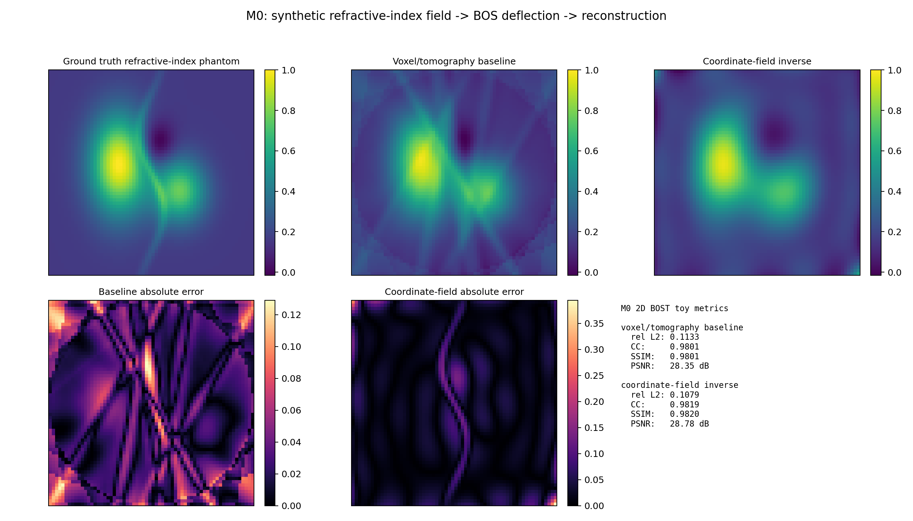
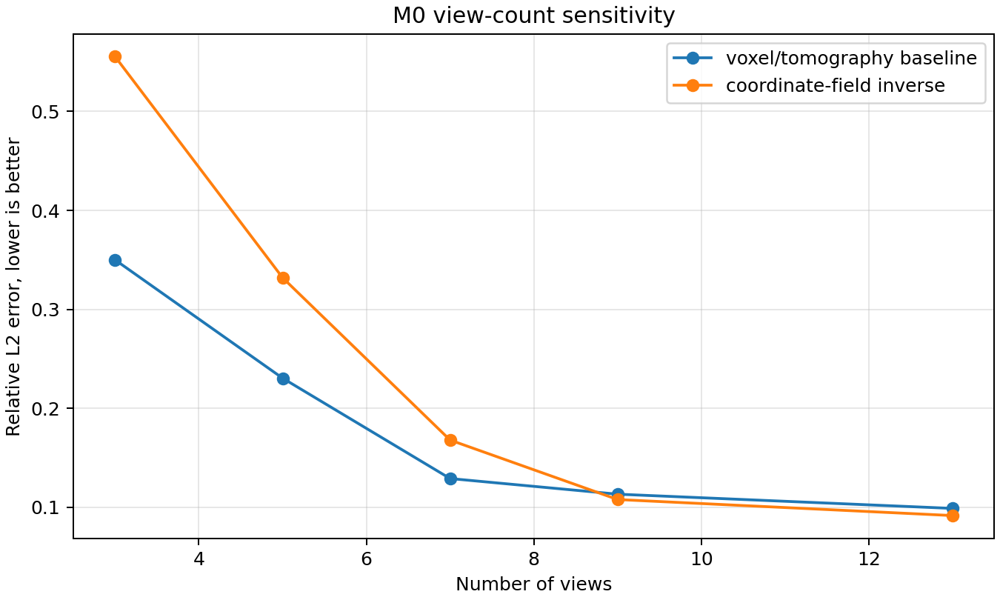
当前结果：9 视角下 baseline rel L2 约 0.113，coordinate-field rel L2 约 0.108；少视角时 coordinate-field 更容易不稳，说明后续真正有研究价值的是视角数、噪声、编码和采样策略的鲁棒性边界。
已经跑通的 M1 demo：3D-stack sparse-view BOST
我已经把 M0 升级成一个轻量三维栈重建压力测试：合成一个 44 x 44 x 22 折射率体，生成多视角 BOS-like deflection stack，先做逐层传统栈重建，再用紧凑的三维坐标表示做体正则化。当前 5 视角结果中，baseline relative L2 约 0.257，3D coordinate-regularized stack relative L2 约 0.234；视角数扫描显示 3-5 视角下坐标正则化有帮助，但 7/9/13 视角的干净数据里传统栈重建更强。
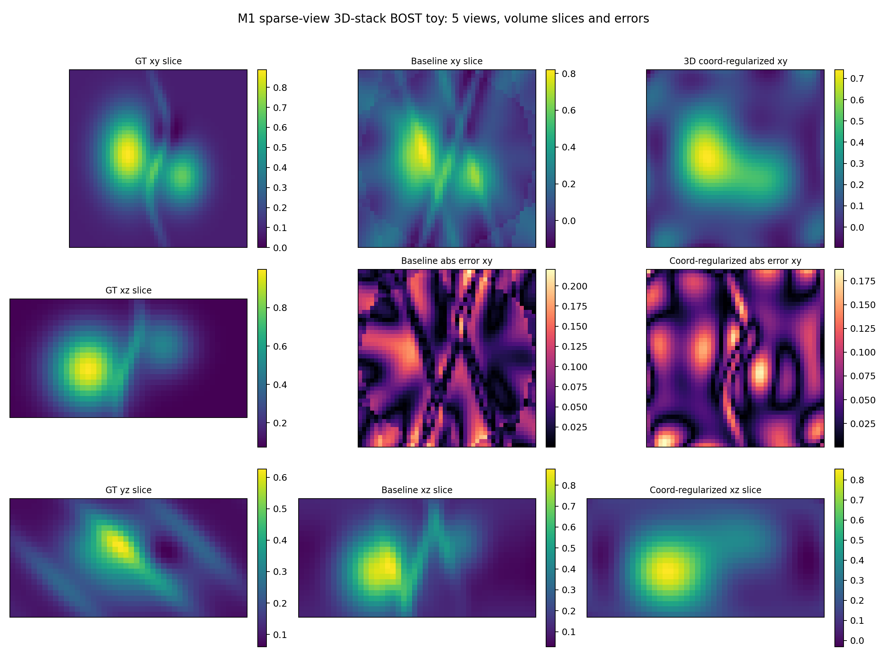
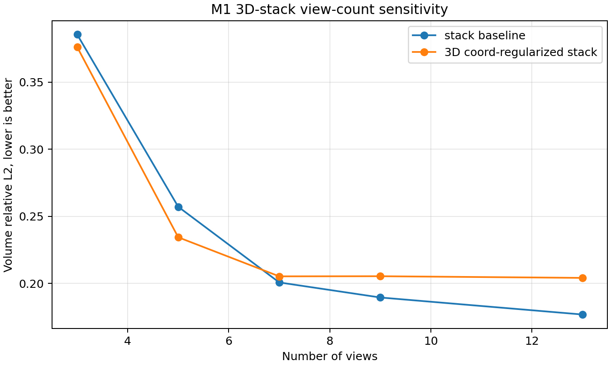
开题时可以把这张图当成“诚实边界”：隐式/坐标先验不是天然胜利，它在少视角、噪声、mask、真实几何和时序/多物理量约束里才最值得研究。这个问题正好可以拿去问何远哲：真实 OERF 数据的主要瓶颈到底是视角数、噪声、几何，还是表示容量？
已经跑通的 M2 demo：鲁棒性扫描
M2 把 M1 的单次压力测试扩展成实验矩阵：扫描 3/5/7/9 视角和 0/0.03/0.06/0.10 deflection noise，并额外测试 random Fourier feature 容量。当前结果非常适合写进开题：3/5 视角的 8 个噪声设置中，3D coordinate regularizer 全部降低相对 L2；7/9 视角的 8 个设置中，传统 stack baseline 全部更好。容量扫描显示，feature count 太低会过度平滑，约 120 以后才开始超过 5 视角 noisy baseline。
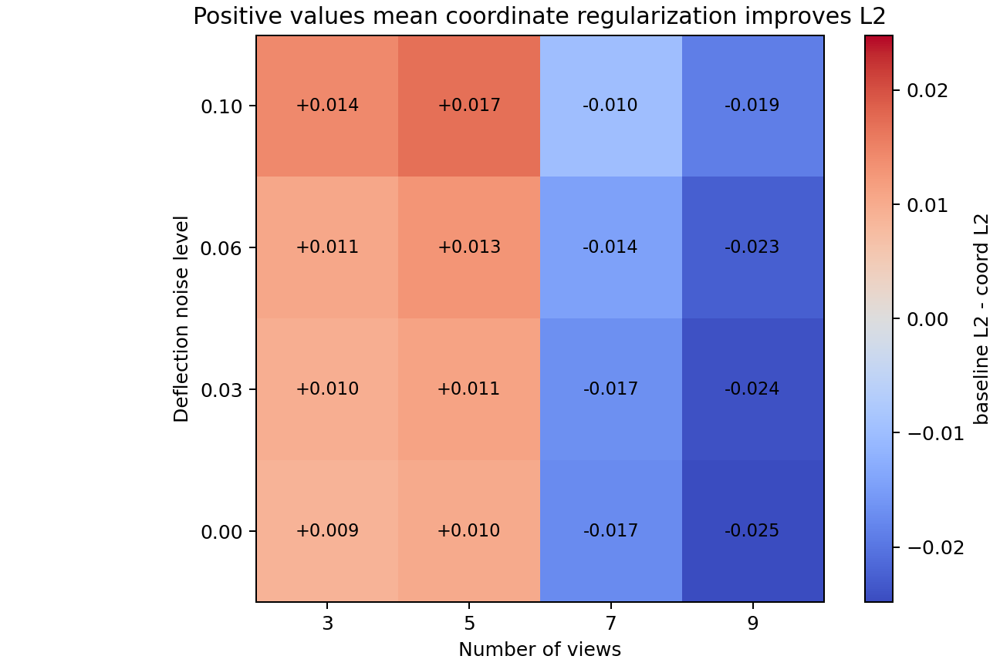
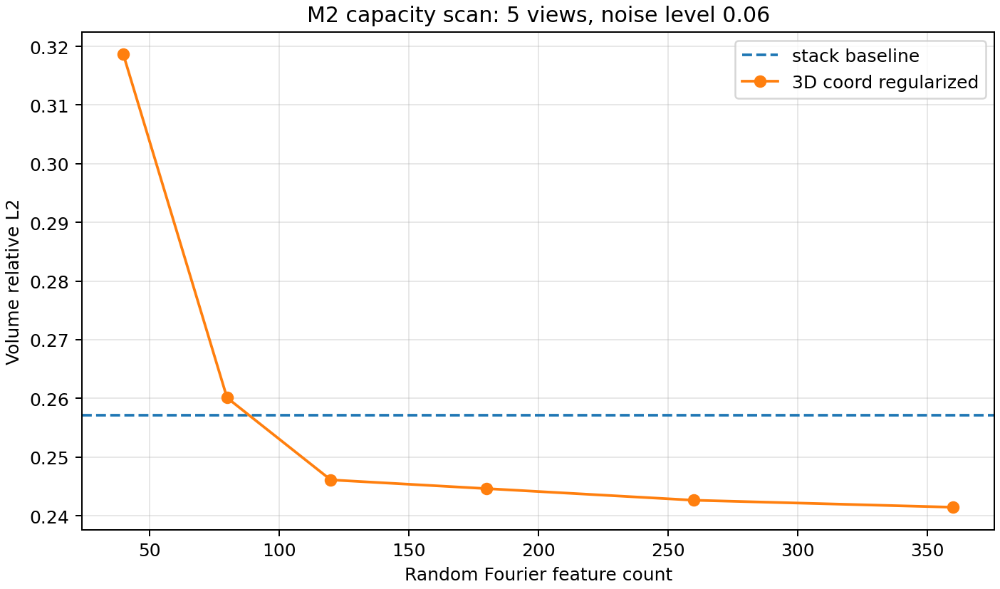
这组图能支撑一个更真实的毕设命题：不是“用 AI 替代传统 BOST”，而是“定量找出隐式体先验在少视角/噪声/容量约束下的适用区域，并把这个判断迁移到 OERF 真实 BOST/PIV-BOST/4D 数据”。
已经跑通的 M3A demo：PIV-BOST 速度补偿 toy
M3A 对齐何远哲 PIV-BOST 方向，但保持本科阶段的可控边界：它暂时不做真实粒子图像互相关，而是在速度向量场层面模拟“粒子运动前后折射图像位移的变化量”如何污染 PIV 速度，并用 BOST-style 折射位移估计做补偿。当前 observed PIV velocity RMSE 约 0.0101，补偿后约 0.0067；95 分位误差从约 0.0240 降到约 0.0072，但局部尖峰误差仍会因为折射位移估计噪声和端点近似残留。
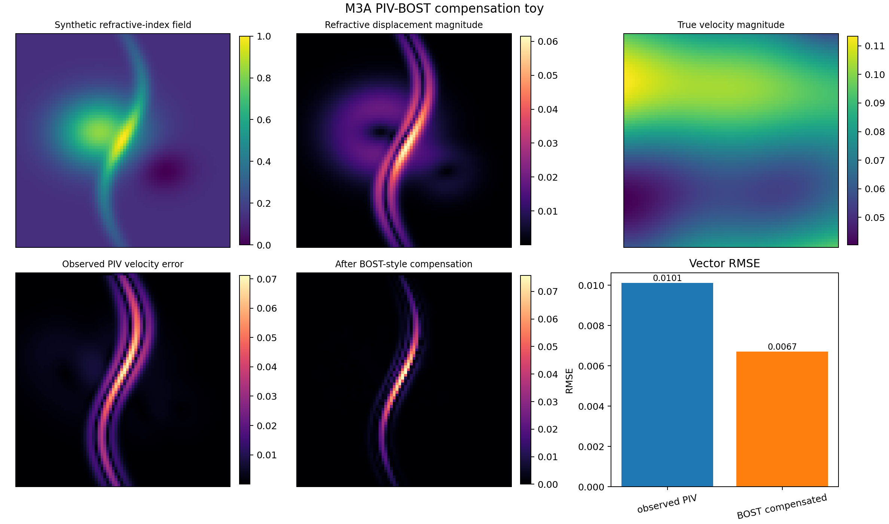
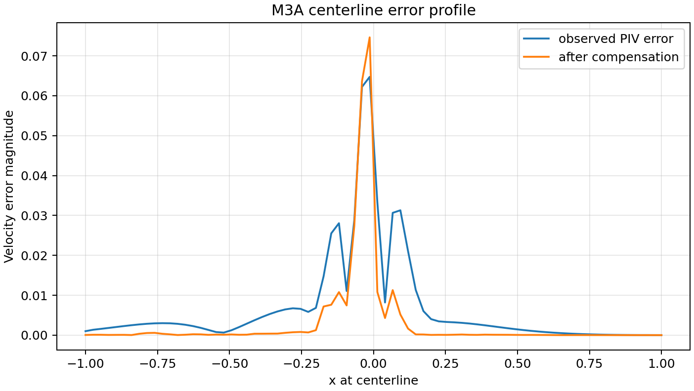
这张图给你一个非常具体的师兄问题：真实同步 PIV-BOST 数据里，最值得做的是校正原始粒子图像、校正速度矢量场，还是先建立 BOST 重构误差到 PIV 速度误差的传播图谱？
已经跑通的 M3B：4D BOST 跨形态无真值容量选择
M3B 对齐何远哲 4D BOST / tensor decomposition 方向，但不承诺复现完整 TOG。六轴 OFAT 和 80 环境交叉实验已先证明固定 rank 依赖 noise/views/dynamics；最新实验进一步交叉 4 morphology × 3 dynamics × 4 noise × 3 views × 6 seeds，共 864 个观测格、6,048 个 rank 候选，并允许 full-rank 拒绝平滑。外层整类留出 phantom，测试时禁止使用 family、noise label、field truth 和 oracle rank。固定 rank 3 的 mean/p95 regret 为 1.561%/5.635%；组合 spectrum/support/temporal 特征在无 held-out camera 时降至 0.252%/1.267%，加入 held-out 为 0.210%/1.054%。直接最小化 held-out residual 反而恶化到 2.423%/9.467%。结论升级为：morphology 是容量选择的一阶变量，数据一致性必须与谱和时序证据联合，下一步应做 geometry transfer、UQ/拒答和真实数据，而不是继续重复 pooled synthetic rank scan。
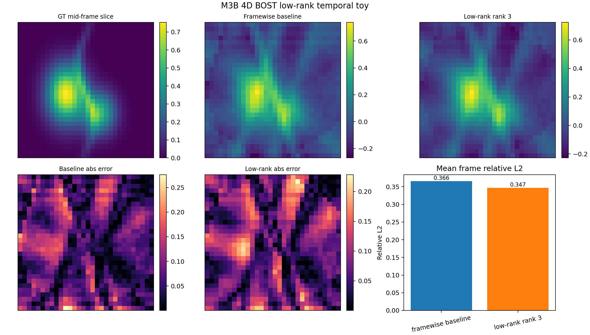
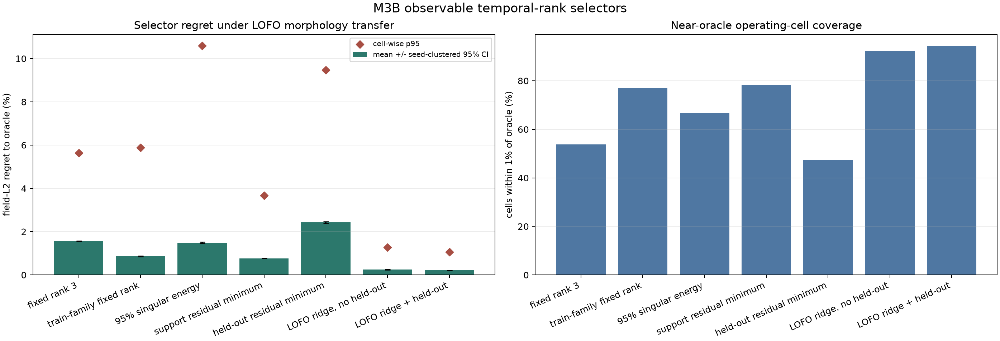
这张 selector regret 图适合拿去问何远哲：组内真实 4D BOST 的容量是否按 case 调、support residual 是否可导出、是否值得保留 held-out camera，以及下一步应先做 geometry transfer、UQ/拒答还是接真实数据。
开题摘要草稿
背景纹影层析（BOST）能够通过背景图像位移反演三维折射率、密度和温度场，是极端反应流非接触诊断的重要手段。然而传统体素离散方法在少视角、含噪和高分辨率条件下面临病态反演、离散化误差和计算/内存成本高等问题。本文拟围绕神经隐式折射率场重构方法，建立 BOST 合成数据、开源数据和课题组真实数据之间可迁移的重构与验证流程。研究将首先复现传统体素/正则化基线和简化 NeRIF 模型，系统分析视角数、位移噪声、坐标编码和采样策略对重构精度与重投影一致性的影响；在具备数据条件时，进一步探索 BOST 重构误差对 PIV 速度测量折射补偿的传播规律，或构建低秩时序先验的 4D BOST 简化模型。预期成果包括可复现实验代码、误差分析图谱、核心参数建议和面向真实 BOST/PIV-BOST 数据的处理接口，为 OERF 课题组的非接触式流场测量与数据融合实验流体力学提供基础工具。
毕业论文写作蓝图
我已经把后续毕业论文拆成 6 章：绪论、BOST 物理模型与反问题、神经隐式折射率场方法、合成数据与最小 demo、真实数据迁移或升级子问题、总结与展望。重点不是等实验全做完再写，而是现在就能先写第 1-2 章，并把 M0 demo 的图表放进第 4 章。
PPT / 论文图示素材
我已经生成一组原创图示，不直接搬论文图：BOST 物理链条、OERF 定位图、NeRIF-style pipeline、数据接口清单、选题决策树和三个月路线图。它们可以直接用于开题 PPT，也可以重画后进入毕业论文。
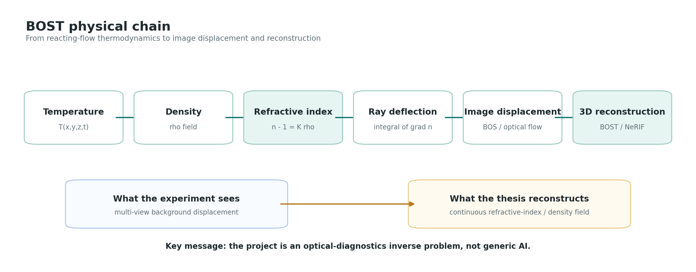
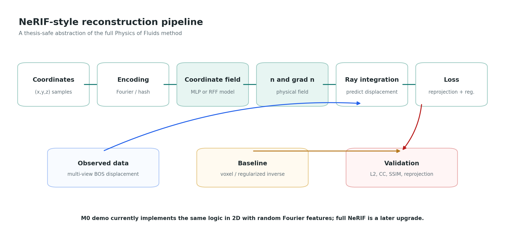
图示生成脚本：figures/generate_figures.py。需要改文字或样式时重新运行即可。
真实数据接入模板
我已经把“向何远哲要哪些数据”进一步落成 manifest 模板：一份九视角 BOST 样例、一份 PIV-BOST 同步样例、Open BOS 公开数据 manifest，以及一个本地校验脚本。最新又把官方 255 KB zip 内容清单解析成 70 行 view manifest：10 个 `ROT_***` flow groups x 7 台相机 = 70 个 REF/DEF image-pair views；13 个 `Angle_*` x 7 台相机则是 calibration 文件，不能和 70 views 混用；并生成 5/7/9/13/21/70 views 的 limited-view 子采样预案。
python3 data_templates/validate_manifest.py data_real/oerf_bost_sample_YYYYMMDD/manifest.json --allow-missing
python3 data_templates/summarize_open_bos_index.py
python3 data_templates/plan_open_bos_subsets.py
这个模板的价值是把真实数据沟通从“师兄能不能给点数据”变成“我需要这几个文件和字段，拿到后第一周交付 data loader、可视化和重投影检查”。Open BOS 的 ROT-to-Angle 几何映射仍需从论文或脚本确认，不能从目录名硬推。
8 页开题 PPT 结构
- OERF 方向图：光学诊断 + 计算重构 + AI。
- BOST 问题：图像位移如何反映折射率梯度。
- 现有方法：voxel/UBOST/NeRIF/NeDF/4D BOST。
- 本科切入点：NeRIF 最小复现与鲁棒性。
- 实验设计：合成 phantom、视角数、噪声、baseline。
- 可能升级：PIV-BOST 或 4D low-rank toy。
- 数据与资源需求：真实数据、标定、GPU、代码。
- 时间表和预期成果。
最小可行成果
冲刺成果
研究目标
- 建立 BOST 合成数据生成与重构评价流程。
- 复现传统 baseline 与简化 NeRIF 神经场重构。
- 系统分析少视角、噪声、编码、采样策略的影响。
- 在数据允许时接入真实 BOST/PIV-BOST 数据。
可能创新点
- 把 NeRIF 从单篇论文复现扩展为系统鲁棒性图谱。
- 比较折射率场、梯度场和偏折场等不同神经表示。
- 建立开源 BOS 数据到 OERF 数据的迁移接口。
- 分析 BOST 重构误差向 PIV 速度误差的传播。
预期成果
- 一套可运行的 Python/PyTorch 重构代码。
- 合成数据、开源数据和真实数据接口说明。
- 参数扫描和指标自动报告。
- 毕业论文图表：切片、误差、重投影、鲁棒性曲线。
建议代码目录
bost-nerif-bishe/
data_synthetic/
data_real_sample/
configs/
src/
phantom.py
forward_bos.py
voxel_baseline.py
nerif_model.py
train.py
metrics.py
visualize.py
notebooks/
results/
reports/
第一周就能开始的任务
- 写一个 2D Gaussian/热羽流折射率 phantom。
- 生成背景点阵被位移后的图像。
- 用 optical flow 或相关法恢复位移。
- 用最简单的正则化从投影恢复场。
- 把结果图自动保存到 results/。
- 写一页 README：输入、输出、误差指标。
数学和代码最小闭环
| 层级 | 物理/数学对象 | 代码模块 | 先做到什么程度 |
|---|---|---|---|
| Ground truth | 折射率场 n(x,y,z)，可由 Gaussian blobs、火焰薄层或 CFD/开源数据给出。 | phantom.py |
先生成 2D/3D 连续 phantom 和切片图。 |
| Forward model | 光线穿过折射率梯度场产生背景位移；简化时可用沿视线的梯度积分。 | forward_bos.py |
先做平行光线和小角度近似，再考虑真实相机几何。 |
| Measurement | 多视角背景位移 u,v；可来自合成图像、optical flow 或真实 BOS 图。 | measure_displacement.py |
先直接用合成位移训练，再接图像位移估计。 |
| Baseline inverse | 体素/网格反演，配合 Tikhonov、Landweber、SIRT/CGLS。 | voxel_baseline.py |
先做粗网格 2D/3D baseline，保证能画对照图。 |
| Neural inverse | 坐标 MLP 表示 n 或 grad-n，用位移误差和梯度一致性训练。 | nerif_model.py, train.py |
先拟合 n-field，再加入 forward loss 和 multi-head 梯度。 |
| Validation | 重构场误差、重投影误差、SSIM/PSNR/CC、训练时间和显存。 | metrics.py, visualize.py |
每次实验自动保存图和指标表，不手工截图。 |
最小闭环的标准：输入一个 phantom，生成多视角位移，用 baseline 和 NeRIF 重构，再自动输出切片、重投影和误差指标。
和师兄沟通后的选题决策树
如果师兄能给九视角 BOST 原始图、标定和参考结果：题目定为“面向真实火焰 BOST 数据的 NeRIF 重构与鲁棒性分析”，重点做真实数据接口、baseline、参数扫描和重投影验证。
如果暂时没有组内数据：题目定为“少视角 BOST 的神经隐式重构与合成/开源数据验证”，重点做 synthetic phantom + open-source BOS dataset，保留迁移接口。
如果能给 PIV-BOST 数据：题目定为“基于 BOST 折射率场的 PIV 速度测量误差补偿”，先做 2D planar PIV，不直接承诺 stereo-PIV。
如果师兄明确希望你接 4D BOST：题目定为“四维 BOST 的低秩时序先验简化研究”，只承诺 toy/子模块，不承诺完整 TOG 复现。
如果师兄更缺工程工具：题目定为“BOST/NeRIF 重构结果自动分析与报告工具”，把图表、指标、参数扫描和数据索引做成组内可用工具。
没有组内数据时的公开数据预案
Open-source BOS tomography dataset of high-speed flow over a flight body 提供 70 视角高速流 BOS 数据，包含 calibration、flow-off/flow-on image pairs、masks、deflection estimates、3D reconstructions 和 NIRT code。Penn State Data Commons 公开目录含 12 个 zip，总量约 51.66 GB，所以它应作为外部 benchmark 下载，而不是放进网页仓库。最新解析确认：70 views 来自 10 个 `ROT_***` flow groups x 7 台相机；`cal_data/Angle_120_deg` 到 `Angle_240_deg` 是独立的 13 x 7 calibration sweep。Hyz617/TDBOST 直接对齐 tensor decomposition 4D BOS/BOST reconstruction，临时 clone 确认含 `TDmodel`、`configs`、`dataloader`、`render`、`projget.py`、`run.py` 和小样例数据，但仓库没有 `LICENSE` 文件；README 的 “open-source” 说法不能当成代码可复制许可，只建议阅读结构和拿去问师兄。
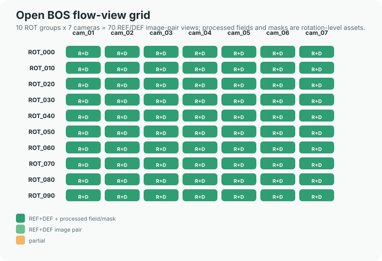
NeRIF 最小实现规范
| 模块 | 最低实现 | 升级实现 | 为什么重要 |
|---|---|---|---|
| 场表示 | 坐标 MLP 输入 x,y,z，输出折射率 n。 | multi-head 输出 n、dn/dx、dn/dy、dn/dz。 | NeRIF 的核心不是 CNN，而是连续坐标场。 |
| 编码 | Fourier/positional encoding。 | 比较无编码、Fourier、hash encoding。 | 高频火焰结构容易被普通 MLP 过度平滑。 |
| 采样 | 每条光线均匀随机采样。 | 分层采样/重要性采样，参考 NeDF 的 hierarchical sampling。 | 采样决定连续积分是否稳定，也影响速度。 |
| loss | 预测位移与测量位移的 MSE。 | 加入自动微分梯度与网络输出梯度一致性、n 推位移和 grad-n 推位移的一致性。 | 这是避免网络只拟合噪声的重要物理约束。 |
| baseline | Tikhonov/Landweber 或简单体素最小二乘。 | SIRT/CGLS/CGLS-VH/UBOST 思路。 | 没有 baseline，毕业论文会像模型展示而不是研究。 |
| 指标 | L2/RMSE、相关系数、训练时间。 | SSIM、PSNR、CC、re-projection validation、显存、视角数曲线。 | 课题组会关心物理重投影是否可信，不只看网络 loss。 |
| 实验矩阵 | 单个 phantom 跑通。 | 视角数、噪声、编码、采样、网络宽度、真实/合成数据全部扫一遍。 | 把“复现”变成“系统鲁棒性研究”。 |
实验矩阵与评价指标
| 实验轴 | 建议取值 | 观察指标 | 你能写出的结论类型 |
|---|---|---|---|
| 视角数 | 3 / 5 / 7 / 9 / 12；若接开源数据可扩到 70 的子采样。 | RMSE、SSIM、PSNR、CC、re-projection error。 | 少视角 BOST 的误差拐点，九视角是否足够。 |
| 噪声强度 | 位移噪声、图像噪声、标定扰动分开加。 | 重构场误差、投影误差、局部峰值保真度。 | NeRIF 相对体素法的抗噪优势或失败边界。 |
| 编码方式 | 无编码 / Fourier encoding / hash encoding。 | 收敛速度、高频结构、过拟合迹象。 | 坐标编码对火焰薄层结构的作用。 |
| 采样策略 | 均匀采样 / 随机采样 / 分层采样 / 重要性采样。 | 训练稳定性、速度、局部峰值恢复。 | 是否需要借鉴 NeDF 的 hierarchical sampling。 |
| 场表示 | n-field / grad-n field / deflection field。 | 重构误差、投影误差、物理一致性。 | NeRIF 与 NeDF 的可解释对比。 |
| PIV 补偿 | 合成粒子图像、中心平面 2D PIV、真实 PIV-BOST。 | 像素偏移、速度误差、补偿前后向量差。 | 折射率场误差如何传播到速度测量。 |
风险登记表
| 风险 | 早期信号 | 降级方案 | 不影响毕业的保底产出 |
|---|---|---|---|
| 拿不到真实 OERF 数据 | 师兄短期无法整理原始图、标定或不确定公开权限。 | 用合成 phantom + 开源 BOS/TBOS 数据完成 pipeline。 | 少视角 NeRIF 鲁棒性研究和可迁移数据接口。 |
| NeRIF 完整复现太慢 | forward model、ray sampling、loss 训练长时间不收敛。 | 先做 2D/2.5D 简化投影；把三维真实数据作为后续接口。 | 坐标 MLP + 简化 BOST forward + baseline 对比。 |
| PIV-BOST 几何太复杂 | 相机标定、PIV 平面、BOST 视角映射对不上。 | 只做合成 PIV 粒子图像和中心平面 2D 补偿。 | 折射率误差到速度误差的敏感性分析。 |
| 4D BOST 规模超出本科 | 显存、时间、论文细节、代码不可用同时卡住。 | 低秩时序 toy，不承诺真实 4D 完整重构。 | 逐帧 vs 时序先验的合成数据对比。 |
| 结果只有算法指标，没有物理意义 | 只看 loss、PSNR，不解释折射率/密度/速度。 | 每张图都加物理量、单位、假设和误差来源说明。 | re-projection validation + Gladstone-Dale 链路 + 误差传播。 |
找何远哲时要问的问题
不要问“我该学什么”这种大问题。要带着 demo 目标和数据需求问，这会显得你已经能开始推进。
第一轮必问
- 师兄更希望我接 NeRIF、PIV-BOST，还是 4D BOST 的子模块？
- 本科毕设最低可接受成果是复现、真实数据处理、误差分析，还是必须参与实验？
- 能否给一小份九视角 BOST 数据：原始图、扰动图、标定参数、参考重构？
- NeRIF 代码能否组内查看？不能的话，baseline 用什么标准？
- PIV-BOST 是否已有整理好的同步数据？是 2D PIV 还是 stereo-PIV？
- 哪些图和数据能写入本科论文？哪些需要保密？
- 课题组 GPU 条件如何？能否长期跑参数扫描？
- 师兄最缺的是算法复现、数据处理、图表工具，还是实验辅助？
会前决策包
我已经把 M0-M3B 五个 demo 压缩成一份 15 分钟沟通结构：先展示 NeRIF/BOST 保底主线，再展示 PIV-BOST 和 4D BOST 两条升级线，最后请何远哲在 A/B/C 主线和 E 误差分析副线之间帮你做选择。
建议你这样表述自己的计划
“我想先用合成数据做一个 NeRIF/BOST 最小闭环，包括传统 baseline、神经场重构、稀疏视角和噪声鲁棒性分析。如果师兄能给一小份真实 BOST 或 PIV-BOST 数据，我再把流程接到真实实验上；如果 4D BOST 方向需要人做 toy 版时序先验或参数扫描，我也可以在后半程升级。”
给何远哲的第一条消息草稿
师兄好，我想把毕业设计尽量贴近您现在的 BOST/NeRIF/4D BOST 方向。我的初步想法是先做一个合成数据上的 NeRIF/BOST 最小闭环：包括传统体素或正则化 baseline、神经隐式折射率场重构、视角数/噪声/采样策略的鲁棒性分析，并自动输出重构切片、重投影误差和指标表。如果您这边方便给一小份九视角 BOST 或 PIV-BOST 样例数据，我可以把同一套 pipeline 接到真实数据上；如果 4D BOST 有适合本科生拆出来的时序先验或参数扫描子问题，我也希望后续尝试。您觉得这个方向是否贴合组里需求？我应该优先补哪一块、向您要哪些数据格式比较合适？
微信 30 秒版
师兄，我初步想把毕设放在 BOST/NeRIF 的可复现重构和误差分析上。先用合成数据做传统 baseline + NeRIF 最小闭环，再看能不能接您这边一小份 BOST 或 PIV-BOST 数据。这个方向是否贴合您现在需要？
组会 1 分钟版
我的计划是围绕 BOST 的三维折射率场重构做本科毕设。第一阶段搭建合成数据和开源 BOS 数据的重构流程，比较传统体素/正则化方法和 NeRIF 类神经隐式场方法；第二阶段做视角数、噪声、坐标编码和采样策略的系统鲁棒性分析；如果能拿到课题组真实 BOST 或 PIV-BOST 数据，再把流程迁移到真实火焰数据并分析折射补偿误差。
正式开题版
本课题面向极端反应流非接触测量中的背景纹影层析重构问题，拟以神经隐式折射率场为核心表示，建立从合成/开源数据到真实 BOST 数据的可复现重构、验证和误差分析流程。研究重点不是提出一个泛化深度网络，而是围绕少视角、含噪位移和有限标定条件下的物理一致重构，给出基线对比、参数敏感性和可迁移的数据处理工具。
会后纪要模板
日期： 参与人： 1. 师兄确认的主方向： [ ] NeRIF/BOST 复现与鲁棒性 [ ] PIV-BOST 折射补偿 [ ] 4D BOST 子模块 [ ] 工具/数据处理 [ ] 其他： 2. 可获得的数据： - 数据类型： - 文件格式： - 标定参数： - 是否可用于本科论文公开展示： 3. 师兄认可的 baseline： - 传统方法： - 神经方法： - 评价指标： 4. 一周内要交付的东西： - 图： - 代码： - 文档： 5. 风险和限制： - 数据限制： - 算力限制： - 保密限制： 6. 下一次沟通时间和要展示的结果：
主要来源
本页不会声称拿到了完整 Google Scholar，因为 Scholar 页面抓取受限。下面这些是本页实际依赖的公开来源。
- 蔡伟伟交大中文主页
- OERF Lab 网站
- OERF Lab GitHub 源码
- NeRIF, Physics of Fluids
- NeRIF arXiv 可读版本
- PIV-BOST, Experiments in Fluids
- 4D BOST, ACM TOG
- Computational flow visualization
- BOS techniques, Experiments in Fluids 2015
- NeDF sparse-view TBOS
- Neural-implicit laser absorption tomography
- Unified BOST
- Time-resolved BOST AIAA 2025
- Open-source BOS tomography dataset
- OERF plenoptic imaging, JOSA A 2019
- Single-camera endoscopic tomography, JOSA B 2020
- MIT OCW 2.06 Fluid Dynamics
- Princeton CEFRC combustion notes
- Kak & Slaney CT 成像教材
- OpenPIV documentation
- PyTorch Learn the Basics
| 来源类型 | 如何使用 | 注意事项 |
|---|---|---|
| 交大主页 / OERF 官网 | 用于确认研究方向、成员、项目线索、代表性论文和招收需求。 | 主页更新可能滞后；“accepted”条目需等正式 DOI。 |
| 出版社 / DOI / Crossref | 用于确认正式题名、期刊、年份、卷期页码和 DOI。 | 当 OERF 源码与出版社不一致时，正式引用按出版社/DOI。 |
| arXiv | 用于读开放全文、方法细节、图表和更新版本。 | 若已有期刊版，参考文献优先引用期刊 DOI，arXiv 作为可读入口。 |
| Semantic Scholar | 用于作者页、引用数、外部 ID 和发现相邻论文。 | 索引可能滞后或合并同名作者；不能替代出版社核验。 |
| 本地引用库 | references.bib 可直接用于开题文档和后续 LaTeX/Markdown 管理。 | 当前只收核心主线和竞品方法，旁支论文后续再扩展。 |
| 本地使用说明 | README.md 记录工作台结构、推荐使用顺序、维护规则和验证记录。 | 后续新增数据、代码或报告时，建议同步更新 README。 |
| 开题交付件 | one_page_proposal.md、he_review_portal.html、he_review_feedback_pack.md、he_meeting_decision_pack.md、opening_report_draft.md、opening_ppt_outline.md、defense_qna_bank.md、thesis_blueprint.md、meeting_notes_template.md。 | 分别用于开题沟通、师兄 5 分钟 HTML 审核、师兄快速审核、师兄会前定题、开题报告正文、开题 PPT、答辩问答、毕业论文写作和会后记录。 |
| 执行交付件 | starter_code_spec.md、nerif_bost_implementation_blueprint.md、experiment_matrix_and_figure_plan.md、experiment_templates/、minimum_demo_protocol.md、weekly_checkpoint_board.md、demo_m0/、demo_m1/、demo_m2/、demo_m3a/、demo_m3b/。 | 分别用于代码仓库初始化、模块接口/数组形状/指标约定、实验矩阵和论文图表计划、实验配置、最小 demo 设计、12 周推进验收、2D 闭环、3D 栈重建压力测试、鲁棒性扫描、PIV-BOST 补偿 toy 和 4D 低秩时序 toy。 |
| 真实数据模板 | data_templates/README.md、bost_sample_manifest.json、piv_bost_manifest.json。 | 用于接收 OERF 样例数据、记录单位/几何/权限、检查缺失字段。 |
| 图示素材 | BOST 链条、NeRIF pipeline、选题决策树、生成脚本。 | 用于开题 PPT、论文第 1-3 章和师兄沟通。 |
| 深挖与补课 | he_paper_deep_dive.md、he_bost_citation_spine.html、nrip_reproducibility_audit.html、computational_flow_visualization_bridge.html、agent_for_science_bost_bridge.html、stereo_piv_bost_bridge.html、neural_field_encoding_bridge.html、optical_flow_displacement_bridge.html、bost_system_error_bridge.html、classical_tomography_baseline_bridge.html、paper_to_demo_map.md、cai_project_alignment_map.md、oerf_direction_backlog.md、core_paper_reading_cards.md、foundation_bridge.md。 | 何远哲论文深挖把 NeRIF/PIV-BOST/4D BOST 转成可复现实验；He/BOST 引用脊柱给出主线文献链；NRIP 专项审计把正式 DOI、公开但无 LICENSE 的作者仓库、配置差异、NeRIF-vs-NRIP 表示差异、Mac/CUDA 门槛和 clean-room 消融矩阵讲清；其余桥梁分别负责计算流动显示站位、Agent 辅助层、Stereo PIV-BOST 三层补偿、神经场编码、光流位移、BOST 系统误差和传统层析 baseline。映射表、对齐地图、全方向 backlog、精读卡和基础桥梁继续负责 demo、开题与物理本科补课。 |
| 长期追踪表 | reading_log_template.md、data_request_checklist.md、topic_decision_matrix.md。 | 分别用于持续读论文、向何远哲要数据、在 2-3 个备选题之间做选择。 |
| 来源审计 | pdf_cache_audit.html 面向公开分享，解释哪些 PDF 可缓存、哪些只能跳转；source_audit.md 记录 DOI/题名冲突、正式引用优先级和需复核条目；oerf_source_gap_scan.md 专门对比 OERF 官网源码代表论文和本地论文库覆盖度。 | 写开题或论文参考文献时先看它们，避免抄入早期占位 DOI。 |
本页生成日期：2026-07-07。未来如果 OERF 网站或论文 DOI 更新，需要重新核验。
更新日志
记录本页已经完成的增量，方便后续继续迭代。
建立 OERF 四大方向、何远哲主线、题库、路线图、文献索引和师兄沟通清单。
加入方法邻居：UBOST、NeDF、NILAT、time-resolved BOST、PINN-BOS 和开源 BOS/TBOS 数据。
加入人和方向对接图、PIV-BOST 数据请求清单、NeRIF 最小实现规范、公开数据预案和前 4 周执行表。
加入蔡老师公开项目线索、课题组需求推断、核心文献精读卡、BibTeX 引用库、风险登记表、选题决策树和开题摘要草稿。
加入选题评分模型、数学和代码最小闭环、三档沟通话术，以及对备选转向方向的更明确边界。
加入执行包：7 天冲刺计划、第一周验收标准、数据目录规范、变量公式速查、最小 demo 伪代码和会后纪要模板。
加入 BOST/NeRIF 术语表与英文检索词，并新增 README 文件说明工作台结构、使用顺序、维护规则和验证记录。
新增一页开题提案、何远哲会后纪要模板和 BOST/NeRIF starter code 规格，并把这些交付件链接进网页和 README。
新增 OERF 全方向研究雷达，补充阅读追踪表、数据请求清单和选题决策矩阵，把调研从静态报告推进成可持续使用的毕设工作台。
新增来源与 DOI 审计记录，单独保存 NeRIF、VET、JFM 2019、Combustion and Flame 2025、Nature Electronics 2026 等关键纠错。
新增何远哲主线论文深挖和物理本科基础补课桥梁，把 NeRIF、PIV-BOST、4D BOST 映射到可复现实验、开题章节和三个月学习产物。
新增开题 PPT 逐页大纲、最小 demo 实验协议和 12 周推进验收板，把调研进一步收束成汇报材料和每周交付标准。
新增可运行的 M0 2D BOST / coordinate-field toy demo，生成结果总图、视角数曲线和指标 CSV，并将 demo 结果嵌入开题包。
新增毕业论文蓝图，包含 6 章目录、图表清单、结果叙事、写作节奏和不同完成度下的诚实边界。
新增原创 PPT/论文图示素材：BOST 物理链条、OERF 定位、NeRIF pipeline、数据接口、选题决策树和三个月路线图。
新增真实数据接入模板：BOST/PIV-BOST manifest、推荐数据目录和 manifest 校验脚本，把向师兄要数据转成可执行的数据工程接口。
新增 M1 3D-stack sparse-view BOST demo：合成三维折射率体、逐层栈重建、三维坐标正则化、体指标和视角数曲线，用于讨论隐式场在少视角条件下的真实边界。
新增 M2 robustness scan：扫描视角数、deflection noise 和坐标正则化容量，生成噪声曲线、改进热图和容量扫描，把 demo 进一步推进成可写进论文第 4 章的系统实验。
新增 M3A PIV-BOST compensation toy：用合成速度场和折射位移场展示 PIV 速度误差传播与 BOST-style 补偿效果，把何远哲 PIV-BOST 方向也纳入可运行材料包。
新增 M3B 4D BOST low-rank temporal toy：构造时序三维折射率体、逐帧 sparse-view 重构和低秩 SVD 时序先验，生成 4D 总图、rank trade-off 和时序轨迹，把 4D BOST 子问题纳入可运行材料包。
新增何远哲会前决策包：把 M0-M3B 五个 demo 压缩成 15 分钟汇报结构、A/B/C 三条定题路径、会议必问 8 个答案和会后 7 天动作。
新增论文到 demo/选题映射表，并补入 2026 stereo PIV-BOST compensation 文献，把核心文献直接对应到 M0-M3B、论文章节、师兄问题和可交付产物。
新增本科毕业设计开题报告正文初稿和开题答辩问答库，把调研、demo、文献和路线图进一步转成可提交文本与现场答辩材料。
新增导师/师兄三页 brief、高优先级选题 proposal 卡和蔡伟伟/OERF 研究谱系，把厚调研压缩成会前可沟通、可定题、可解释主线边界的材料。
新增 OERF 公开论文-方向-毕设切入索引，并把 OERF publications.ts 中的代表作、研究方向、何远哲主线缺口和 DOI/题名核验风险分层整理。
新增物理本科到 BOST/NeRIF 的 12 周基础训练营，把流体、燃烧、BOST、反问题、PIV、PyTorch 和神经隐式场转成每周可验收任务。
新增 NeRIF/BOST 代码实施蓝图和实验配置模板，明确第一版仓库结构、数组形状、模块接口、指标、实验命名和 30 天 coding plan。
新增核心论文精读卡片集，把 NeRIF、PIV-BOST、4D BOST、BOS 综述、BOST 前史、UBOST、Computational Flow Visualization 和开源 BOS 数据集转成公式、参数、demo 和师兄问题。
新增开题参考文献短表与引用位置，整理 15 篇推荐文献、正文引用句模板和 GB/T 风格草稿，避免正式开题时误用 OERF 源码占位 DOI。
新增公开数据与开源代码 benchmark 路线图，以及 Open BOS manifest 模板，把无组内数据时的合成/开源数据保底路线变成可执行数据接口。
新增实验矩阵与论文图表计划，以及实验登记 CSV 模板，把 M0-M3B、open BOS 和真实数据迁移对应到论文图、论点、失败边界和下一步。
新增蔡伟伟公开项目语言到本科毕设题目的对齐地图，把导师主页、OERF 方向和何远哲主线翻译成可沟通题目、开题定位段落、风险边界和师兄确认问题。
新增给何远哲师兄的 3 分钟审核入口、快速审核包和 OERF 全方向本科毕设研究问题池，让公开网页更适合发给师兄快速判断主线、数据、baseline、指标和第一月交付。
新增论文 PDF 跳转库，第一批整理 14 篇核心论文与阅读入口，缓存 7 篇开放 PDF 并生成封面预览，同时保留 PIV-BOST、4D BOST、UBOST、Raffel BOS 等版权敏感论文的出版社链接。
扩展论文库到 32 篇，缓存开放 PDF 19 篇，新增传统 3D-BOS、BOS 位移估计、光流/实时 GPU、投影/方向性背景、Tomo-BOS + PINN 和 physics-informed BOS 文献，用于支撑可落地本科选题。
把论文库扩展到 OERF 全方向入口：新增 VET、Science/Nature 计算光谱、eLight 重构光谱、Science Advances 光谱传感、Nature/Nature Communications 等离子体、何远哲参与的金属颗粒多物理测量、全息颗粒追踪、LES/data assimilation 等背景文献；总计 45 篇入口、22 篇开放 PDF 缓存。
补入何远哲/PIV-BOST 后续与 4D BOST 外部邻居：新增 stereo-velocity PIV-BOST 2026 和 AIAA time-resolved BOST 2025 两个官方阅读入口，把论文库扩展到 47 篇，同时明确它们是冲刺/展望条目。
补入蔡老师主页最新 AI+多维光场/光计算线索：新增 reconstructive comb spectroscopy、volumetric optical scattering neural networks 和 Nature Electronics memristor computational spectrometry 三篇开放 PDF，并修正 Nature Photonics “Simple yet powerful” DOI 与题名；论文库扩展到 50 篇、25 篇缓存 PDF。
继续补 OERF 流体光学诊断与颗粒燃烧旁支：新增 Applied Optics 2026 4D LII、POCI 2024 single-shot time-resolved LII、金属颗粒诊断综述、铁颗粒碳杂质微爆/热后火焰杂质燃烧、2022 铁颗粒微爆前史和铝化推进剂三维颗粒测量；论文库扩展到 57 篇，缓存 PDF 仍保持 25 篇。
对照 OERF 官网源码继续补漏：新增 Ning Liu 2019 Applied Optics view-registration tomography、Ning Liu 2020 Combustion and Flame RIVR turbulent flame tomography、Yutao Zheng 2023 3D flame surface measurements，并修正源码中对应 DOI/题名错配；论文库扩展到 60 篇。
继续核 OERF 等离子体/超快光谱旁支：新增 2025 Nature Communications “Enhanced production of active species and NH3 using non-equilibrium ferroelectric barrier discharge”，修正源码占位题名/DOI，缓存开放 PDF 并把等离子体四条代表作加入关键论文索引；论文库扩展到 61 篇、26 篇缓存 PDF。
继续补公开代码/数据 benchmark：核实 Open-source BOS dataset 的 Data Commons 数据/代码 DOI `10.26208/1VE2-5C19`、12 个 zip 和约 51.66 GB 外部数据边界，并补 TRON-BOS Zenodo 样例、event-based BOS、helium jet BOS velocimetry 和 PIVMat 的用途定位。
补齐蔡组单相机/内窥/光场/AI tomography 前史：新增 2018 RSI 机器学习快速断层、2018 Optics Letters 维度约简实时体层析、2019 单相机 kHz 火焰体成像、2019 plenoptic light-field 评估、2020 10 kHz 内窥 LIF、2020 单相机内窥参数扫描/标定模型和 2020 低帧率 2D 到高帧率 3D 火焰序列重建；论文库扩展到 69 篇，缓存 PDF 仍为 26 篇。
继续补神经 tomography / BOST 误差分析邻居：新增 Fire 2023 BOST turbulent flame time-asynchrony 开放 PDF 并缓存，补入 PENTAGON、PIPEN、NVRT、Fast-NFRT、2019 rapid flame CT、physics-trained sparse-view LAT 和 FluidNeRF；论文库扩展到 77 篇、27 篇缓存 PDF。
把 BOST 时间不同步、缺失视角、坏视角和神经投影补全整理成 T15 选题与 E 路线；同步更新选题矩阵、论文到 demo 映射和 README，让它成为 NeRIF/BOST 主线的真实实验误差增强副线。
新增 Hyz617/TDBOST 开源代码线索：核验 README、仓库结构、GitHub 元数据和无 license 边界，将其放入公开数据/代码 benchmark 路线图，定位为 4D BOST tensor-decomposition 代码结构参考。
校正 2025 BOS 25 周年综述元数据：将 NASA NTRS 粗略条目升级为 AIAA Journal 正式 DOI `10.2514/1.J065669`，保留已缓存 NASA 开放 PDF，并加入 BibTeX 与主页关键论文索引。
补入 2024 Physics of Fluids hybrid BOST reconstruction refinement 和 2023 Flow Measurement and Instrumentation BOS design rules 两篇方法邻居；论文库扩展到 79 篇，缓存 PDF 仍为 27 篇，两篇均只放正式 DOI/出版社链接，不缓存受控 PDF。
补齐 BOS/BOST 实验仿真与不确定度模块：新增 PIV/BOS ray tracing synthetic image generation、dot tracking、wavelet optical flow、background pattern performance、optical system optimization、density uncertainty / WLS / ODI、BOS velocimetry、single-camera telecentric BOS tomography、swirl-flame TBOS 和 panoramic BOS；论文库扩展到 94 篇、34 篇缓存开放 PDF。
补入 4D/神经流场重构邻近论文：FlameRF、Neural dynamic fluid reconstruction technique、二维测量到三维温度/速度重构、稀疏数据 PINN 火焰重构；论文库扩展到 98 篇、34 篇缓存开放 PDF。它们不是何远哲主线论文，但可用于对照 4D BOST 的低秩张量/时空表示、projection supervision 和 sparse-measurement reconstruction。
补入 Springer BOS 专题中的 pyramid BOST coarse-to-fine refinement，更新 realtime GPU optical-flow BOS 到 2026 正式期刊 DOI；同时补入蔡组 soot/metal-oxide nanoparticle tomography benchmark 和 3D flame curvature evaluation，论文库扩展到 101 篇、34 篇缓存开放 PDF。
根据 ORCID、Semantic Scholar、Crossref 和 Springer 核验何远哲作者谱系：补入 NH3/CH4 turbulent premixed flame reaction-progress balance 旁支论文，新增 `he_author_audit.md`，并标出医学影像/心理方向同名索引噪声不进入毕设主线；论文库扩展到 102 篇、34 篇缓存开放 PDF。
补入 OERF CTC / endoscopic tomography 桥梁批次：restricted-FOV CTC、CTC 空间分辨率、4 kHz CTC、吸收校正 CTC、单相机 3D velocimetry、kHz 多角端oscopic tomography、3D Rayleigh index 和相机布置优化；论文库扩展到 110 篇、35 篇缓存开放 PDF，并把 M3C 系统误差/视角鲁棒性副线写入精读卡与 benchmark 路线图。
补入 OERF TAS / NTAS 计算重构批次：frequency-agile TAS、多物理量吸收层析、beam optimization、TAS inversion benchmark、NTAS regularization、limited-data NTAS deep learning、POD-compressed CNN、Measurement: Sensors 深度学习算法和 dictionary-learning TAS；论文库扩展到 118 篇、36 篇缓存开放 PDF，并把 view selection / learned prior 接入 M3C。
补入 OERF geometry / mesh / data-assimilation 批次：volumetric tomography imaging model assessment、透明平板窗口重构、非结构网格吸收层析、光纤束/增强相机校正、CTIS-GAN、多光谱吸收层析正则化和 EnKF/LDM 反应流数据同化；论文库扩展到 125 篇、37 篇缓存开放 PDF，并把真实几何、投影模型、网格离散和远期数据同化接入 M3C。
补入 OERF CTIS / super-resolution spectrometry 批次：computed tomography imaging spectrometry with superiorization and guided filtering，以及 super-resolution CTIS；论文库扩展到 127 篇、38 篇缓存开放 PDF。该批次只作为“有限投影 + 高维数据立方 + guided/AI prior”的方法邻居，不改变何远哲 BOST/NeRIF 主线。
补入 Early Cai CTC / practical tomography roots：2013 Optics Express CTC 数值/实验验证、2013 Applied Optics volumetric flame tomography 实现细节和 2021 Optics Express finite-element basis / adjustable mask；论文库扩展到 130 篇、40 篇缓存开放 PDF，并把 view orientation、空间分辨率、标定/重构参数和 mask/ROI 纳入 M3C。
补入 PIV-BOST 支线前史：Particle image velocimetry in refractive index fields of combustion flows，缓存 Springer 开放 PDF；论文库扩展到 131 篇、41 篇缓存开放 PDF，并把 particle-position error、systematic/random velocity error 和 ray-tracing verification 接到 M3A。
补入 BOS foundation/design/AI displacement 批次：Computerized BOS、BOS density measurement、Goldhahn sensitivity/accuracy/resolution、practical BOS design、LIMA CNN deformation、HBOS flames、numerical uncertainty、whole-field DIC density、neural optical flow for PIV 和 rocket-jet BOS；论文库扩展到 142 篇、46 篇缓存开放 PDF，并把 sensitivity、blur、resolution、uncertainty、image warping 和强折射真实案例接入 M3A/M3C。
补入 PIV-BOST 图像层支撑批次：PIV classical operating rules、instantaneous local PIV uncertainty、RAFT-PIV Nature Machine Intelligence 论文和 Zenodo 数据入口；论文库扩展到 146 篇、46 篇缓存开放 PDF，并把 OpenPIV/互相关 baseline、per-vector confidence 和 neural optical flow 对照接到 M3A。
补入 PIV-BOST image-pair 工具链批次：Vanselow/Fischer 2018、Vanselow stereo-PIV 2021、Elsinga BOS-correct-PIV 2005、Zha image dewarping 2016、Gao/Czarske Hartmann-Shack + CNN 2021/2024、PIVlab、OpenPIV、piv-image-generator 和 SynthPix；论文库扩展到 158 篇、48 篇缓存开放 PDF，并把 raw image dewarping、互相关 baseline、synthetic particle image pair 和 velocity-field correction 接到 M3A。
同步基础补课路线：把 Week 10 PIV-BOST 从“速度场 toy”升级为 synthetic particle image pair -> PIVlab/OpenPIV 互相关 -> raw image / displacement / velocity correction 三层接口；主页工具链新增 PIV image generators，并更新 foundation bridge 的 PIV 学习边界。
重新拉取 OERF GitHub 源码的 research / publications / members 数据，对 21 条代表作做交叉审计；在 OERF 方向索引中明确标出 Multi-kHz 3D flame imaging 源码 DOI `10.1016/j.combustflame.2023.112731` 指向错误论文，不能正式引用，并修正 Nature Synthesis / Nature Communications 等离子体旁支的源码占位 DOI 边界。
重排选题建议：保持 NeRIF/BOST 鲁棒性为第一主线，同时把 PIV-BOST 升级路线写成 synthetic particle image pair -> PIVlab/OpenPIV 互相关 -> raw image / displacement / velocity correction 三层接口；更新选题 B、决策矩阵和一页提案的数据需求与降级规则。
补入 OERF/Ning Liu 的 SVLIF 高速三维诊断论文 Hybrid diagnostic for optimizing domain size and resolution of 3D measurements；论文库扩展到 159 篇、48 篇缓存开放 PDF，并把 scanning volumetric laser-induced fluorescence 的 domain-size / spatial-resolution trade-off 放入 OERF 三维诊断背景图谱。
补入 OERF nonlinear tomography 批次：HORIBA Readout 的 Nonlinear Tomography 公开 PDF、Optica 2014 multiplexed WMS nonlinear tomography 和 pressure imaging 官方入口；论文库扩展到 162 篇、49 篇缓存开放 PDF，并把 OERF 源码中的 nonlinear tomography 方向接到 TAS/NTAS 与 computational imaging 背景。
复核何远哲 4D BOST / TDBOST 边界：Crossref 确认 ACM TOG 45(5), 1-19、online 2026-06-29、print 2026-10-31；临时 clone TDBOST 核到模块树、小样例数据和无 LICENSE 文件，把“只读结构、不复制代码”的许可边界写入公开数据路线图。
新增 `tdbost_module_mapping.md`：把 TDBOST 的 README、configs、projget、TDmodel、dataloader、render、metrics 和 sample data 映射到本科 M3B/M3C 的安全实现路线，并整理 8 个可直接问何远哲的问题。
新增 Open BOS 数据访问协议：缓存 Data Commons 255 KB zip 内容清单，核准 12 个 zip 总量约 51.66 GB / 48.12 GiB，提取 13 个角度、7 台相机、1838 个文件条目和 calibration / deflection / results / scripts / CAD 结构，并写成无组内数据时的 7 天 loader/report 预演路线。
新增 Open BOS 官方索引解析工具：`summarize_open_bos_index.py` 从 255 KB Data Commons 清单生成 `open_bos_index_summary.json`、70 行 `open_bos_view_manifest.csv`、`open_bos_view_plan.md` 和 `open_bos_view_grid.svg`；明确 13 x 7 是 calibration 文件，10 x 7 才是 70 个 REF/DEF flow views，ROT-to-Angle 几何映射需从论文/脚本确认。
新增 `plan_open_bos_subsets.py`：从 70 行 Open BOS view manifest 自动生成 5/7/9/13/21/70 views limited-view 预案，输出 `open_bos_subset_plans.json` 和 `open_bos_subset_plans.md`；9-view 预案可直接作为第一次 limited-data BOST baseline 与何远哲讨论。
补入 M3C 真实 forward-model / neural tomography sanity-check 批次：AIAA Journal depth-of-field BOS cone-ray model、Applied Optics localized gradient-index BOS、Measurement Science and Technology neural implicit representation tomography for flow diagnostics；论文库扩展到 165 篇、50 篇缓存开放 PDF，把有限光圈/景深 blur、localized gradient-index 和通用 coordinate-field tomography 接到真实 BOST 数据质量控制。
新增 `light_field_single_camera_bridge.md`：把 OERF plenoptic / light-field / single-camera endoscopic tomography 谱系整理成 BOST/NeRIF 的背景桥梁，明确这条线用于解释少相机、多视角编码、标定、空间分辨率和真实几何误差，不替代何远哲主线。
补入 PIV-BOST image-layer 工具链开放 PDF：缓存 MDPI OpenPIV-Python CPU 和 AOPIV-Net Hartmann-Shack/PIV 畸变校正论文；论文库仍为 165 篇，缓存开放 PDF 增至 52 篇，并把 PIV-BOST 图像层从只读链接推进到可直接阅读 PDF。
新增 `tdbost_decision_bridge.md`：复核 ACM TOG 4D BOST 的 Crossref 正式状态、蔡伟伟主页最新论文入口和 TDBOST GitHub 无 LICENSE 边界，把 4D BOST 收缩成低秩时序先验、rank/noise/frame-count 扫描、temporal consistency 和数据质量报告等本科可做子问题。
新增 `oerf_latest_direction_triage.md`：把蔡伟伟主页最新流体光学诊断论文分流成 He 主线升级、方法邻居和应用背景，明确 U-Net 火焰前沿、4D LII、铁颗粒氨共燃和全息 3D tracking 该如何服务而不是冲散 BOST/NeRIF 主线。
补入 U-Net / flame-front segmentation 可读方法邻居：缓存 Springer Experiments in Fluids 2024 “Deep learning-based image segmentation for instantaneous flame front extraction” 开放 PDF；论文库扩展到 166 篇、53 篇缓存开放 PDF，并在 source audit 中明确蔡老师主页 POCI 2026 accepted 条目仍待正式 DOI。
补齐 OERF AI for volumetric tomography 的两个过渡节点：新增 Aerospace Science and Technology 2020 limited-projection VT 与 2021 transfer/semi-supervised limited-labels VT；论文库扩展到 168 篇、53 篇缓存开放 PDF，并在阅读卡中把它们接到 4D BOST / NeRIF 的少视角、少标注、跨工况迁移背景。
新增 `oerf_source_gap_scan.md`：对 OERF 官网 `publications.ts` 的 20 条代表论文做源码-本地库缺口扫描，确认本地论文库按题名/方向已覆盖代表作，同时单列 Nature/Science/PECS/JFM/Combustion and Flame 等多条源码占位 DOI 的纠错边界。
增强 OERF 等离子体/材料合成旁支的可读入口：Nature 2023 “A stable atmospheric-pressure plasma...” 与 Nature Synthesis 2026 “Electrified vapour deposition...” 的 `Open online PDF` 改为 OSTI/DOE accepted manuscript 直达 PDF；不缓存到仓库，缓存数仍为 53。
补入 OERF CTC / digital holography / metal-particle diagnostics 扩展包：新增 Optics Express 2019 high-spatial-resolution CTC、POCI 2023 annular-chamber CTC、Combustion and Flame 2021 burning-iron DIH、MST 2021 clustering-based holographic particle detection 和 POCI 2026 iron-ammonia micro-explosion；论文库扩展到 173 篇、53 篇缓存开放 PDF，并新增 Card 18 作为颗粒/全息备选线。
完成一处关键 DOI/题名纠错：`10.1016/j.combustflame.2023.113171` 经 Crossref 与 ScienceDirect 核验应为 “Phase change and combustion of iron particles in premixed CH4/O2/N2 flames”，不是旧条目里的 flash-boiling LES；论文库总数不变，方向归类从 LES/data assimilation 移入金属颗粒相变/燃烧建模。
回填 OERF 方向索引的核验状态：把 2020 view registration、Science 2022 光谱仪、Nature Photonics 2024、Nature Electronics 2026、Nature/Nature Communications plasma、Nature Synthesis 2026、2025/2026 金属颗粒与全息 tracking 等旧“需重核”行改为正式 DOI 和当前访问边界。
补入 2 篇 NASA/NTRS 官方 PDF：AIAA 2022 “Reference-Free, Projection Background Oriented Schlieren” 与 “Preparations for Tomographic Background-Oriented Schlieren at the 31-Inch Mach 10 Wind Tunnel”；论文库扩展到 175 篇、55 篇缓存开放 PDF，强化 M3C 真实实验系统设计、投影背景、reference-free 处理和风洞 TomoBOS 工程准备。
继续补入 NASA/NTRS “Background-Oriented Schlieren for Large-Scale and High-Speed Aerodynamic Phenomena” 官方 PDF；论文库扩展到 176 篇、56 篇缓存开放 PDF，用于说明大尺度/高速 BOS、密度灵敏度和 BOS + computed tomography 冲击波重构案例。
补强何远哲 4D BOST 开放材料边界：明确 ACM DOI 是正式入口，未找到可缓存作者开放 PDF，ResearchGate 只作发现线索，Hyz617/TDBOST 无 LICENSE 时只能结构级参考，不直接复制代码。
新增 PDF 可读性与缓存边界审计页，把 NeRIF、PIV-BOST、4D BOST、TDBOST 代码许可和出版社 PDF 访问边界单独说明；论文库扩展到 182 篇、60 篇缓存开放 PDF，并新增/补缓存 WLS 密度积分 OSTI 版本、Springer OA vector tomography BOS、Cambridge onboard consumer-grade BOS、IOP H2-air 火焰 tomoBOS 限制；MDPI supersonic jet TBOS、Science China Tomo-PIV/Tomo-BOS transonic jet 和 AIAA supersonic crossflow BOS 只放官方入口不缓存。
继续补 Springer BOS 专题里的低成本/投影背景工程支撑：缓存 Pocket Schlieren arXiv PDF 与 forward-projected BOS for sparks Springer OA PDF；论文库扩展到 184 篇、62 篇缓存开放 PDF。同步更新 OERF 源码缺口扫描，标出 Nature Chemical Engineering 2025 EVD 条目疑似占位/串线，暂不入库、不作为正式引用。
新增 `reproducibility_audit.html` 主线可复现性审计，把 NeRIF、PIV-BOST、4D BOST、Open BOS、TDBOST、photon、OpenPIV 和 event-based BOS 的 PDF/代码/数据/许可边界拆开说明；论文库扩展到 188 篇、63 篇缓存开放 PDF，新增 Event-Based BOS arXiv 缓存，并补入蔡组 event-triggered BOS / DMD dynamic projection / adaptive event-frame schlieren 官方入口，定位为高速/低成本传感器旁支。
升级 NeDF 竞品线索：将 NeDF 从 arXiv 条目更新为 Physics of Fluids DOI `10.1063/5.0241191`，新增并缓存 AIP Figshare CC BY 4.0 supplement；论文库扩展到 189 篇、64 篇缓存开放 PDF，用于提取 NeRIF-vs-NeDF/NRIP 对照所需的 error metrics、training hyperparameters 和 network structures。
补强 neural refractive tomography 邻居：将 NRIP 回填为 Combustion and Flame DOI `10.1016/j.combustflame.2026.115082`；新增 CVPR 2024 Single View Refractive Index Tomography with Neural Fields，缓存 arXiv PDF 与作者 supplement，并记录 MIT 代码仓库 `brandonyzhao/rtnf`。该文只作为 curved-ray forward model、single-view ambiguity 和 neural field 代码组织参考，不作为 OERF/BOST baseline。
完成一轮核心 PDF 补漏：缓存 Raffel 2015 “Background-oriented schlieren (BOS) techniques” Springer CC BY 官方 PDF，作为 BOS/BOST 入门根文献；同步记录 IOP PIV optical distortion correction 虽被开放索引标记为 CC BY，但命令行直取返回验证码 HTML，因此不缓存。
补入 PIV-BOST 同步测量支撑：新增 AIP Physics of Fluids 2025 “Simultaneous optical velocity and density measurements of resonant nonlinear internal waves in pycnocline”，DOI `10.1063/5.0275821`，并放入官方 PDF 入口。Crossref 显示 CC BY-NC 4.0，但本地命令行下载返回 403，因此只放在线 PDF 链接，不缓存。
增强主线 PDF 访问边界：明确 PIV-BOST 的 Springer PDF 链返回 HTML challenge、Unpaywall 无 OA location；4D BOST 的 ACM landing 虽被 Unpaywall 标为 OA/CC BY，但 `doi/pdf` 与 `doi/full` 直取均返回 403，因此公开网页继续只放官方入口，不缓存 PDF。
继续补开放阅读入口：缓存 IOP 2024 neural implicit representation tomography for flow diagnostics、SUUB Bremen 公开的 2018 PIV inhomogeneous refractive-index postprint，以及 IOP 2016 PIV optical distortion correction；MDPI 2024 supersonic jet TBOS 官方 PDF 约 65 MB，不塞入 GitHub Pages 仓库，只保留在线 PDF 直链和本地封面预览。论文库保持 192 篇，已缓存开放 PDF 增至 70 篇。
补充 OERF 金属颗粒燃烧旁支的机构库边界：TU/e repository 可直接阅读两篇铁颗粒燃烧 PDF，但首页写明 Taverne license，适合私人学习下载/打印，不适合复制进公开 GitHub Pages。论文库已加入在线入口和审计说明，不缓存全文或封面图。
缓存 IOP 2025 “Optimization of optical systems for background oriented schlieren”，12 页开放 PDF 已核验。它不属于何远哲主线论文，但非常适合补 BOST/NeRIF 实验设计背景：entocentric vs telecentric optical design、景深、放大率、边界层 BOS 和系统优化约束。
新增 MDPI Photonics 2025 “Numerical Background-Oriented Schlieren for Phase Reconstruction and Its Potential Applications”，CC BY 4.0 PDF 已缓存。这篇用于补 M3C forward-model sanity check：ray tracing、optical flow 位移、conjugate-gradient phase reconstruction、JHTDB 湍流场和 shock-wave degradation limits；不是 OERF/何远哲主线，只作方法邻居。
继续补新近 BOS/BOST：缓存 JPNE 2026 counterflow diffusion flame BOS 的 CC BY-NC PDF；新增 Holographic BOS、plenoptic-camera TBOS、gaseous fuel jet BOS tomography 和 AIAA buoyancy-driven flows/flames TBOS facility 的官方入口。Optica/IOP/ScienceDirect/AIAA 的 PDF 自动访问返回验证页或 403，因此这些只放正式 DOI/出版社链接。
从 NeRIF、PIV-BOST、4D BOST 和 open BOS dataset 的参考文献反查补入 19 篇支撑论文：BOS 光学断层起源、synthetic schlieren、Schlieren/Shadowgraph 综述、graded-index ray tracing、CBOS/CGBOS、3D density assessment、NASA Langley TBOS、Hayabusa / hypersonic BOS 和 PIV 折射率误差链。仅 Hayabusa re-entry capsule BOS 确认为 Springer CC BY 4.0 PDF 并缓存，其余只放官方入口。
补入 neural/model-based BOS tomography 邻居：缓存 Advanced Imaging 2026 “Model-based neural network tomographic reconstruction...” CC BY 4.0 PDF；新增 TU Graz neural flame-field data/scripts、heterodyne BOS reactive-flow dataset、SPIE 2023 neural tomography、AIP/PoF 2024 PINN-BOS velocity assimilation、AIAA 2023/2025 physics-informed BOS/CNN 和 MERL/arXiv indoor airflow BOST 入口。大 zip 和下载超时 PDF 只放在线链接，不缓存。
把 Molnar et al. 2023 Experiments in Fluids “Estimating Density, Velocity, and Pressure Fields in Supersonic Flows Using Physics-Informed BOS” 从出版社跳转条目升级为可直接阅读：缓存 arXiv `2208.04280v2` 30 页 PDF 并生成封面；Springer 正式 DOI `10.1007/s00348-022-03554-y` 保留为出版页，不复制 TDM/受控出版商 PDF。论文库保持 225 篇，已缓存开放 PDF 增至 76 篇。
新增 Molnar and Grauer 2022 Measurement Science and Technology “Flow field tomography with uncertainty quantification using a Bayesian physics-informed neural network”，缓存 arXiv `2108.09247` 18 页 PDF 和封面；正式 DOI 为 `10.1088/1361-6501/ac5437`。它不是 BOS 专篇，但提供 LoS tomography、PINN regularization、Bayesian UQ 和 semi-convergence 风险背景，适合服务 NeRIF/4D BOST 的可信重构评价。论文库扩展到 226 篇、77 篇缓存开放 PDF。
补入 Settles/Liberzon helium jet BOS/Schlieren velocimetry companion dataset：Zenodo DOI `10.5281/zenodo.6136052`，CC BY 4.0，四个 run zip 约 0.85-1.07 GB。该入口适合 PIV-BOST/OpenPIV-BOS 前置训练和数据接口练习，但 GB 级数据不放进 GitHub Pages。论文库扩展到 227 篇，缓存 PDF 保持 77 篇。
补入 JOSA A 2026 “Adaptively balanced Poisson-constrained physics-informed neural networks for robust displacement integration in background-oriented Schlieren”，DOI `10.1364/JOSAA.581983`。该条目用于支撑 BOS 位移场积分、Poisson 约束、adaptive loss balancing 和噪声鲁棒性小模块；Crossref 已核，Unpaywall/OpenAlex 显示无开放仓储全文，因此只放 Optica 官方入口，不缓存 PDF。论文库扩展到 228 篇，缓存 PDF 保持 77 篇。
新增 Ultrasonics / arXiv 2025 “High-resolution pressure imaging via background-oriented schlieren tomography: A spatiotemporal measurement for MHz ultrasound fields and hydrophone calibration”，正式 DOI `10.1016/j.ultras.2025.107614`，缓存 arXiv `2410.23652` 17 页 PDF 和封面。该条目用于说明 VT-BOS/BOST 可以服务压力场时空测量和 hydrophone spatial averaging 评估，但应用场景是 MHz 超声水槽，不应直接等同 OERF 火焰 BOST。论文库扩展到 229 篇、78 篇缓存开放 PDF。
新增 Sensors 2021 “Extraction of a Weak Flow Field for a Multi-Rotor Unmanned Aerial Vehicle (UAV) Using High-Speed Background-Oriented Schlieren (BOS) Technology”，DOI `10.3390/s22010043`，缓存 MDPI CC BY PDF 和封面。该条目用于补低成本/大视场/弱流 BOS、frequency-domain PIV correlation、Poisson density calculation 和 time-series baseline stacking；只作为公开 demo / input-quality 工程参考，不替代 He 主线。论文库扩展到 230 篇、79 篇缓存开放 PDF。
补入 BOS 前处理和神经重构数据接口批次：JOSA A 2023 “Displacement extraction of background-oriented schlieren images using Swin Transformer”、Optics Express 2025 “Complex-background-oriented schlieren technology based on convolutional neural networks”、SPIE Optical Engineering 2025 “Reconstruction of refractive index gradients...” 以及 TU Graz CC BY 4.0 data/code DOI `10.3217/vyf5w-yqf81`。这批只放官方/数据入口，不缓存 Optica/SPIE PDF；论文库扩展到 234 篇，缓存 PDF 保持 79 篇。
补入 TU Graz 2024 “Heterodyne Background-Oriented Schlieren for the Measurement of Thermoacoustic Oscillations in Flames” data/code DOI `10.3217/7k9f0-7wb03`。该入口把 1.8 GB 数据包和 23.7 MB Python 代码包分开，适合先研究 HBOS 的 Fourier/phase processing 与数据组织；论文库扩展到 235 篇，缓存 PDF 保持 79 篇。
补入 Springer 2019 “Mobile visualization of density fields using smartphone background-oriented schlieren” 官方 CC BY 4.0 PDF 并缓存，作为低成本 BOS/demo 和相机/背景误差讨论材料；同时补入 2014-2026 氢喷流/氢泄漏 BOS 应用链，包括 concentration measurement、electro-hydrogen coupled system、obstacle effects、Dual-Channel MGR-Net density/pressure visualization 和 transfer learning。氢泄漏条目只放 ScienceDirect/DOI 入口，不缓存 Elsevier 受控 PDF；论文库扩展到 241 篇、80 篇缓存开放 PDF。
补入 TRON-BOS Zenodo 样例数据 DOI `10.5281/zenodo.18118110`，题名为 “Volumetric Density Measurements of a 4-nozzle Rocket operating at NPR=5.00”，license 为 CC BY 4.0。Zenodo 文件清单显示 `DaVis.zip` 约 9.1 GB、`Delta.mat` 约 1.38 GB、`Sinograms.mat` 约 1.28 GB，并含 `Inverse_Radon_DEMO.m`、`OSMODI.mexw64`、`vtkwrite.m` 等小脚本/solver 文件；论文库扩展到 242 篇，缓存 PDF 保持 80 篇。
补充公开 BOS 代码许可边界：TRON-BOS GitHub API 未识别到 LICENSE，其依赖 `pressure-osmosis` / OSMODI 声明主体为 GPLv3 or later；OpenPIV/bos 主体 LICENSE 为 MIT，但 `imwarp.m` 带研究用途/非商业限制；event_based_bos README 指向 License，但 GitHub API 根目录未返回 LICENSE 文件。结论：这些仓库适合读结构和写独立实现，复制代码前必须确认许可。
缓存 Yutao Zheng 2023 “3D flame surface measurements in low-turbulence Bunsen flames via scanning and orthogonal cross-planar techniques” Cambridge repository PDF。该 PDF 首页标注 Elsevier open access / CC BY 4.0，适合作为 OERF 高时空分辨三维燃烧诊断、AOD scanning、orthogonal cross-planar validation、3D flame surface area、FSD 和 principal curvature 的可读前史材料。
复核蔡伟伟交大中文主页，确认 `10.1016/j.combustflame.2024.113864` 被页面误链到 micro-explosion 题名；Crossref 显示该 DOI 实为 “A flamelet-based Eulerian transported PDF method for the modeling and simulation of supersonic combustion”。新增为 OERF reacting-flow simulation / supersonic combustion modeling 旁支，论文库扩展到 243 篇；同时复核何远哲 Semantic Scholar 作者页仍为 8 条、6 条 OERF 相关、2 条同名/索引噪声。
补入 Springer CC BY 4.0 PDF 两篇：2016 “Optical-flow-based background-oriented schlieren technique for measuring a laser-induced underwater shock wave”和 2026 Shock Waves “Background-oriented schlieren measurements for gas-detonation-powered pressure relief systems in the free field”。前者服务 BOS optical-flow 位移估计 baseline，后者服务高速/冲击波/爆轰应用边界；论文库扩展到 245 篇、83 篇缓存开放 PDF。
补入实时 BOS 工程化官方入口：NASA 2025 “Real-Time Fourier Background Oriented Schlieren”，DOI `10.64631/doyj7956`，NTRS citation `20250009318`；AIAA 2022 “Real-Time Background Oriented Schlieren Using a Digitally Generated and Displayed Speckle Pattern”，DOI `10.2514/6.2022-1310`；IOP 2020 “Real-time background oriented schlieren with self-illuminated speckle background”，DOI `10.1088/1361-6501/ab4211`。三者用于实时处理/背景设计支线，论文库扩展到 248 篇，缓存 PDF 保持 83 篇。
补入 BOS 位移/验证/高速三维缺口包 11 篇：axisymmetric refractive-index BOS、3D shock-wave BOS、projection BOS、BOS vs interferometry benchmark、hybrid variational / FPGA / wavelet / global optical-flow BOS、flight/wind-tunnel optical-flow BOS、Convection Over Coffee dataset 线索和 supersonic-flow TBOS。Optica/Hindawi/IOP/AIAA/Elsevier/Springer 多数只放官方入口；论文库扩展到 259 篇，缓存 PDF 保持 83 篇。
升级 NASA flight/wind-tunnel optical-flow BOS：将 AIAA `10.2514/6.2017-0472` 对应 NTRS `20180002139` 的 18 页官方 PDF 缓存进论文库；同时新增 cross-correlation vs optical-flow BOS、real-time BOS、11-ft transonic TomoBOS、retroreflective plume-shock BOS、rocket-engine altitude-test BOS、hypersonic-inlet BOS、supersonic-aircraft / celestial-object flight BOS 和 2026 ground-test BOS advancements 官方入口。论文库扩展到 270 篇、84 篇缓存开放 PDF。
补入 PyAbel / Abel transform validation toolchain：缓存 Review of Scientific Instruments 2019 “A direct comparison of high-speed methods for the numerical Abel transform” 的 arXiv `1902.09007` 9 页 PDF，保留正式 DOI `10.1063/1.5092635`，并把 Kaganovich 2020 BOS vs interferometry benchmark 的 open-source Python / PyAbel 反演链补完整。论文库扩展到 271 篇、85 篇缓存开放 PDF。
补入两篇传统 TBOS arXiv baseline：Javed Mohd 和 Debopam Das 的 buoyant plume TBOS（arXiv `2503.17705`，42 页，八相机、Poisson projected density、SART）以及 Bron/Baars/Schrijer 的 overexpanded supersonic jet TBOS（arXiv `2311.10332`，21 页，四相机、FBP/SART、NPR 和相机参数影响）。论文库扩展到 273 篇、87 篇缓存开放 PDF。
把 “Indoor Airflow Imaging Using Physics-Informed Background-Oriented Schlieren Tomography” 升级为可直接阅读：缓存 arXiv `2509.14442` 3 页 PDF 和封面；MERL 技术报告 PDF 直链保持为额外官方来源但不复制未完成下载残片。它补 single-view projector-camera BOST、improved ray tracing、physics-based rendering loss 和 PINN regularization 的对照材料。论文库保持 273 篇，缓存开放 PDF 增至 88 篇。
把 12 篇 NASA/NTRS 官方 BOS 工程 PDF 全部升级为本地可直接阅读：cross-correlation vs optical flow、real-time BOS、Real-Time Fourier BOS、11-ft transonic TomoBOS、retroreflective plume-shock、GRC flow visualization、GRC ground-test facilities、rocket-engine altitude-test、hypersonic inlet、supersonic-aircraft flight、celestial-object flight BOS 和 2026 ground-test advancements。论文库保持 273 篇，缓存开放 PDF 增至 100 篇，封面图增至 101 张。
补入 OERF 等离子体/材料合成旁支的 2 篇 DOE/OSTI accepted manuscript PDF：Nature 2023 “A stable atmospheric-pressure plasma...” 43 页，以及 Nature Synthesis 2026 “Electrified vapour deposition...” 63 页。它们用于完整呈现课题组 plasma energy / extreme-temperature synthesis 方向，不改变何远哲 BOST/NeRIF 主线。论文库保持 273 篇，缓存开放 PDF 增至 102 篇，封面图增至 103 张。
补入 neural-field flow reconstruction 桥梁材料：新增 Dustin Kelly 2024 Auburn ETD “On the development of a Neural Radiance Field technique for tomographic reconstruction applied to flow diagnostics” 在线 PDF 入口，以及 ICML/PMLR 2022 “NeuroFluid” arXiv PDF 本地缓存。它们用于解释 FluidNeRF / NeuroFluid 与 NeRIF 的观测模型差异，不作为 BOST baseline。论文库增至 275 篇，缓存开放 PDF 增至 103 篇，封面图增至 104 张。
复核何远哲 ORCID public API 与 Semantic Scholar 作者页的差异：ORCID 当前直接列出 4D BOST、NeRIF、2025 simultaneous PIV-BOST 和 iron particle heat exchange，但暂未列出 2026 stereo PIV-BOST 或 NH3/CH4 reaction-progress；这两条保留为 Semantic Scholar 发现线索并用 Crossref/出版社 DOI 核验的展望/旁支，不再写成 ORCID 已覆盖全部旁支论文。同步更新 `he_author_audit.md` 和 `source_audit.md`。
新增 `oerf_pdf_gap_sweep_2026_07_08.md`：逐条复核 He 主线、OERF BOST 前史、UBOST、POCI open-access LII/annular flame、IOP 金属颗粒综述和数字全息检测等高价值缺口。结论是本轮没有新的可稳定缓存 PDF；Springer 多数为订阅/购买入口，ScienceDirect OA PDF 命令行返回 403，IOP 多为 standard/TDM 链接，ResearchGate 不作为缓存来源。
新增 `code_data_reuse_audit.md`：复核 TDBOST、OpenPIV、photon、PyAbel、RTNF、TRON-BOS、NeuroFluid、event-based BOS、piv-image-generator、pressure-osmosis 和多个 Zenodo / TU Graz / Penn State 数据集的许可、体量和可复用边界。同步纠正 SynthPix 条目：arXiv API 能确认论文与 PDF，但没有暴露代码仓库 URL，因此代码入口仍需另行核验。
补充 NRIP / Neural Refractive Index Primitives 代码入口边界：arXiv HTML 链接 `Weihu22/Neural-Implicit-Reconstruction-for-BOS`，GitHub API 显示 no license，根目录含 C++、Common、MATLAB、PYTHON 和 `readme.txt`。建议只读 MATLAB phantom / test data、Python NIR-BOS 训练、hash/Fourier encoding、mask 和 gradient-loss 组织，不复制代码进本科仓库。
复核 Open BOS / NIRT 公开数据代码入口：arXiv 末尾与 DataCite 均指向 Data Commons DOI `10.26208/1VE2-5C19`，DataCite 摘要明确写有 full tomography codebase；zip 清单显示 `pyscripts/` 12 个文件含 `NIRT.py`、`train.py`、`network.py`，另有 MATLAB `scripts/` 与 `tools/`。由于 DataCite `rightsList` 为空，本页把这些代码定位为结构参考和 benchmark pipeline 线索，不复制进网页仓库。
补入 3 篇 2025 Springer / Experiments in Fluids 开放 PDF：全尺寸直升机 BOS velocimetry、super-temporal schlieren reconstruction 和 characteristics-based quantitative schlieren。它们分别补速度诊断、大视场工程实验、space-to-time 时间重建、aliasing/高频扰动和 Mach-line/流向定量反演边界；论文库扩展到 278 篇、106 篇缓存开放 PDF、107 张封面图。
补入 DOE-BOS / hidden-grid / fringe-demodulation 相位处理批次：缓存 Applied Optics 2025 deep-learning assisted BOS fringe demodulation 的 arXiv 2509.25201、Optics and Lasers in Engineering 2020 GPU-assisted DOE-BOS 的 arXiv 1910.11872、Optics and Lasers in Engineering 2023 hidden-grid BOS 的 arXiv 2209.13546；另新增 2025 strong-refraction fringe tracking 的 ScienceDirect DOI 入口。论文库扩展到 282 篇、109 篇缓存开放 PDF、110 张封面图。
补入 Frontiers 2022 “A Survey for 3D Flame Chemiluminescence Tomography: Theory, Algorithms, and Applications” 开放综述，缓存 19 页 CC BY 4.0 PDF 并生成封面。它用于给 OERF CTC/FCT、三维火焰层析、投影模型、ART/SART、正则化、压缩感知和深度学习重构补基础综述；论文库扩展到 283 篇、110 篇缓存开放 PDF、111 张封面图。
补入 2019 EBOS / Enhanced Background Oriented Schlieren：Crossref 显示 IOP VOR 为 CC BY 3.0，IOP 官方端点完整下载不稳定，改缓存 Polimi 机构库同一篇 IOP PDF 并生成封面。它补多张未扰动背景图、多图平均、背景刚体位移、interrogation area 和 cross-correlation uncertainty reduction；论文库扩展到 284 篇、111 篇缓存开放 PDF、112 张封面图。
补缓存蔡组 Optics Letters / Optica Open 事件相机可视化两篇短稿：2024 “Event-triggered background-oriented schlieren” 4 页 PDF 和 2025 “A temporally adaptive schlieren approach by fusing frame- and event-based cameras” 5 页 PDF。它们服务 OERF 高速/低成本/计算成像式流场可视化图谱，不建议替代何远哲 NeRIF/PIV-BOST/4D BOST 主线；论文库保持 284 篇，缓存开放 PDF 增至 113 篇，封面图增至 114 张。
复核 NeRIF 参考链里的 wOFA / Wavelet-Based Optical Flow Analysis：OSF PDF 临时下载为 20 页且首页题名/作者匹配，但 OSF DataCite 与 JSON-LD 元数据均写明 No license，因此只保留在线入口、不缓存本地 PDF。同步补入 Case Western FPI Lab BOS Processing Software 入口和使用边界：可作为 M3A/PIV-BOST 前处理工具参考，使用时引用 Schmidt and Woike (2021)，复制代码或再分发软件前需确认许可。论文库保持 284 篇，缓存开放 PDF 保持 113 篇，封面图保持 114 张。
补齐蔡老师 Google Scholar 高引前 20 中的 4 个本地缺口：Science 2019 “Single-nanowire spectrometers”、Aerospace Science and Technology 2019 燃烧不稳定非侵入诊断综述、Computer Physics Communications 2008 simulated annealing multispectral tomography，以及 Nature Communications 2024 “Broadband miniaturized spectrometers with a van der Waals tunnel diode”。其中 Nature Communications 2024 为 CC BY 4.0，已缓存 7 页官方 PDF；Science 2019 的 King's Research Portal accepted manuscript cover page 明确禁止 further distribution，因此只放 Science DOI/机构入口；Elsevier AST/CPC 条目只放官方入口。论文库扩展到 288 篇，缓存开放 PDF 增至 114 篇，封面图增至 115 张。
用 OpenAlex 蔡伟伟作者 `A5089978492` 做差集扫描，并回到 Crossref/出版社页核验后补入 6 篇谱系材料：2025 MST computational imaging for flow visualization 专刊导言、2024 Science China untrained neural network for LTAS、2024 Research Square schlieren wavelet optical-flow velocimetry、2021 Optics Express 4D tomographic two-color pyrometry、2015 fan-beam TDLAS tomographic sensor、2009 hyperspectral absorption tomography。仅 Research Square 预印本为稳定 CC BY 4.0 PDF 并缓存 22 页文件；Optics Express 三篇虽为 VOR-OA，但自动 PDF 端点返回 Optica/Radware 验证 HTML，因此只放官方 fulltext/abstract 入口。论文库扩展到 294 篇，缓存开放 PDF 增至 115 篇，封面图增至 116 张。
补入 TAS root sweep 10 篇：2008 hyperspectral tomography temperature/concentration 数值成像、2008 optimal regularization parameters、2010 POD hyperspectral tomography、2011 H2O absorption controlled validation、2011 temperature-parallel simulated annealing、2012 DLAS velocity uncertainty、2014 calibration-free WMS multiplexed absorption tomography、2015 high-resolution multispectral absorption flow thermometry、2017 MUMAS、2018 spectral-line selection。该批用于把 OERF 从传统正则化/低维先验/观测设计到 neural/Tensor/NeRIF 的谱系补完整；本轮无新增可稳定缓存 PDF，论文库扩展到 304 篇，缓存开放 PDF 保持 115 篇，封面图保持 116 张。
重新拉取 OERF GitHub raw `publications.ts` 做结构化差集复核：当前 20 条代表作中 17 条可按 DOI、题名或已纠正 DOI 对应本地库；剩余 3 条暂不机械入库，其中 Nature Chemical Engineering `10.1038/s44286-025-00001-x` 与 Nature Communications `10.1038/s41467-025-00001-x` 在 Crossref 返回 404，Combustion and Flame `10.1016/j.combustflame.2023.112731` 的正式题名不是源码写的 multi-kHz flame imaging。同步更新 `oerf_source_gap_scan.md` 和 `source_audit.md`，用于提醒开题引用不要照抄官网源码 DOI。
复查 Semantic Scholar 何远哲作者 `2322747160`：当前仍为 8 条、23 次引用、h-index 2；与本地论文库对照后，没有新的 OERF/BOST 漏项。Semantic Scholar 仍把 NeRIF 显示为 arXiv DOI，并混入两条医学影像/心理方向疑似同名噪声；本地审计继续以 NeRIF、PIV-BOST、4D BOST 为主线，stereo PIV-BOST 和 NH3/CH4 reaction-progress 只作展望/旁支。
用 OpenAlex/Crossref 做 BOST/BOS 关键词差集扫描，按 DOI 去重后新增 13 篇方法邻居：evolutionary BOST、laser-speckle heated-jet TBOS、hot-cylinder refractive-index BOS、BOS-to-velocity/pressure PINN、CNN displacement super-resolution、speckle sensitivity、dynamic backgrounds、dual-view plenoptic BOS、plenoptic BOS mini-review、wildfire 3D BOST、TIMes emission + refractive-index tomography、spray-flame TIMes 和 serpentine-nozzle TBOS。检测到 JFM espresso PINN、BOS density UQ、2008 optical-flow BOS、Cakir optical-flow BOS、wavelet optical-flow BOS、background-pattern BOS 等已在旧库中，不重复入库。论文库扩展到 317 篇，缓存开放 PDF 增至 116 篇，封面图增至 117 张。
做 PIV refractive-error / optical-distortion targeted sweep，按 DOI 去重后新增 8 篇 PIV-BOST 图像层与标定层支撑文献：adaptive PIV sharpness metrics、thermal plume PIV self-correction、simultaneous PIV + synthetic schlieren、generalized stereo-PIV distortion compensation、shock-wave particle-imaging errors、ASCE refractive-index fluctuation errors 和 non-parametric 3D disparity calibration。缓存 JEOS/EDP Sciences 与 ISPIV repository 2 篇开放 PDF；AIP/IOP/Springer/SPIE/ASCE 受控条目只放 DOI/出版社入口。论文库扩展到 325 篇，缓存开放 PDF 增至 118 篇，封面图增至 119 张。
补入 4D tensor / dynamic neural-field 表示法根文献 6 篇：TensoRF、Tensor4D、K-Planes、HexPlane、TiNeuVox 和 D-TensoRF。6 篇 arXiv PDF 全部缓存并生成封面；正式 DOI 覆盖 ECCV/CVPR/SIGGRAPH Asia，D-TensoRF 按 arXiv 预印本处理。这一批用于支撑 TDBOST/4D BOST 的低秩张量、plane-factor、time-aware voxel、rank-memory-time 和 temporal consistency 语言，不作为 BOST 折射率场 baseline。论文库扩展到 331 篇，缓存开放 PDF 增至 124 篇，封面图增至 125 张。
补入 4D temporal metrics / dynamic tomography 支撑文献 7 篇：Schmid DMD、Tu DMD theory、sparsity-promoting DMD、dynamic X-ray motion model、dimension-reduction Kalman filter、low-rank+sparse dynamic MRI 和 Robust PCA。缓存 Tu/Jovanovic/Burger/Hakkarainen/Candes 5 篇 arXiv PDF 并生成封面；Schmid 与 Otazo 只放 DOI/出版社入口。该批用于支撑 4D BOST / TDBOST 的 DMD mode energy、dominant frequency、low-rank+sparse residual、rank/noise/frame-count 和 temporal consistency 指标，不作为 BOST 重构 baseline。论文库扩展到 338 篇，缓存开放 PDF 增至 129 篇，封面图增至 130 张。
补入 neural field / encoding foundation 支撑文献 7 篇：Fourier Features、SIREN、NeRF、Instant-NGP、DeepSDF、Occupancy Networks 和 Neural Fields survey。7 篇开放 PDF 全部缓存并生成封面；正式入口覆盖 NeurIPS proceedings、ECCV/Springer DOI、ACM DOI、CVF 页面和 Computer Graphics Forum DOI。该批用于支撑 NeRIF/NRIP/NIRT 的 coordinate-field 表示、Fourier/positional/hash encoding、连续标量场和可微导数监督语言，不作为 BOST 重构 baseline。论文库扩展到 345 篇，缓存开放 PDF 增至 136 篇，封面图增至 137 张。
新增 `neural_field_encoding_bridge.html` 专题桥梁页，把 Fourier Features、SIREN、NeRF、Instant-NGP、DeepSDF、Occupancy Networks 和 Neural Fields survey 转成 NeRIF/NRIP/NIRT 的读法、概念映射、encoding ablation 实验、问师兄问题和写作边界；强调这些文献服务表示法和编码基础，不作为 BOST baseline。
补入 classical tomography / inverse baseline 支撑文献 8 篇：Gordon ART、Andersen & Kak SART、Kak & Slaney 教材、Sidky TV-min CT、Chambolle-Pock primal-dual、ASTRA Toolbox、scikit-image 和 Paige-Saunders LSQR。缓存 Sidky arXiv 与 scikit-image PeerJ/HAL 两篇开放 PDF 并生成封面；SART、ASTRA、Chambolle-Pock 等只放 DOI/官方或机构入口。新增 `classical_tomography_baseline_bridge.html`，把 FBP/SART、regularized least squares、TV、ASTRA/scikit-image baseline 和 NeRIF/BOST 写作边界讲清楚。
补入 optical flow / displacement foundation 支撑文献 9 篇：Horn-Schunck、Lucas-Kanade、Farneback、Brox、Barron、FlowNet、FlowNet2、PWC-Net 和 RAFT。缓存 Farneback DiVA 1 篇开放 PDF 并生成封面；FlowNet/FlowNet2/PWC-Net/RAFT 保留 arXiv 直读入口；Horn、Lucas、Brox、Barron 只放 DOI/DBLP/作者入口。新增 `optical_flow_displacement_bridge.html`，把光流位移估计、PIV-BOST image-layer benchmark、confidence 和“光流不等于折射率场重构”的写作边界讲清楚。
新增 `bost_system_error_bridge.html`，把真实 BOST/PIV-BOST 数据接入前的 view geometry、mask/ROI、displacement confidence、spatial resolution、calibration/forward-model error 和数据权限整理成 M3C 系统误差/质量控制路线；支撑论文包括 Raffel BOS 综述、directional rays BOS、BOS optical-system optimization、telecentric single-camera TBOS、蔡组 CTC spatial-resolution 和 view registration / endoscopic calibration 前史。
新增 `he_review_portal.html`，作为可以直接发给何远哲师兄的 5 分钟 HTML 审核入口：只保留总判断、A/B/C/E 四条路线、需要师兄确认的 6 件事、真实数据质量控制、PIV-BOST、4D BOST 和主线深挖入口，避免师兄第一次打开时被完整工作台和 362 篇论文淹没。
把 Acta Mechanica Sinica 2021 “Physics-informed neural networks (PINNs) for fluid mechanics: a review” 从只读出版社入口升级为可直接阅读：缓存 OSTI public PDF 并生成封面。该文只用于 physics-informed BOS / scientific ML 背景补课，尤其是 loss 设计、data/physics balance 和 inverse-problem pitfalls；特别标注作者 Shengze Cai 不是 SJTU Weiwei Cai，避免谱系混淆。论文库保持 362 篇，缓存开放 PDF 增至 140 篇，封面图增至 141 张。
新增 XMU WebVPN 与私有论文库协议、选题路线深挖矩阵和学习日志网页模板；明确 XMUM/VPN 场景下优先使用 WebVPN 代理后的数据库“直达”入口，不走统一身份认证/CARSI，遇到验证码或二次认证就记录为需手动协助并继续做公开来源调研。同步把 `private_library/` 加入不上传清单，防止学校订阅 PDF 被误发到公开 GitHub Pages。
根据 Springer 公开摘要进一步细化 2025 simultaneous PIV-BOST：把一拖九内窥 BOST、Bunsen 火焰、低速 PIV 中央平面、三维折射率场神经重构、折射率梯度到 PIV 平面像素偏移和百分之几量级速度误差补偿，转成 `stereo_piv_bost_bridge.html` 与 `thesis_pathway_matrix.html` 中可执行的 synthetic PIV-BOST toy、数据请求清单和公开/私有阅读边界。
用 OpenAlex 差集扫描核到蔡组 2025 Experiments in Fluids “Benchmark evaluation of event-based imaging velocimetry using digital micro-mirror device”，新增为论文库第 363 个入口。该文服务事件相机、DMD 动态投影、EBIV/PIV-like velocimetry benchmark 和 PIV-BOST 图像层背景；Springer 页面为订阅预览，公开库只放 DOI/出版社入口，不缓存 PDF。
补入 Measurement 2024/2025 “Simultaneous temperature and particle size measurement of burning iron particles using a single color camera”，新增为论文库第 364 个入口。该文属于 OERF 金属颗粒燃烧与低成本计算成像旁支；OpenAlex/DOI 确认 Elsevier OA 和 Figshare 页面入口，但自动 PDF 下载返回 403 HTML，因此公开库只放 ScienceDirect/Figshare 入口，不缓存 PDF。
补入 Measurement Science and Technology 2024 “High-frequency visualization of flexible structures using an event-triggered camera: multiple flapping membranes”，新增为论文库第 365 个入口。该文是蔡组事件相机高速可视化旁支，提供 k-means 时间窗重构、Kalman filtering、10,000 fps 和长时程记录背景；IOP 页面触发 Radware CAPTCHA，公开库只放 DOI/元数据入口，不缓存 PDF。
扩展 `thesis_pathway_matrix.html`：在 A/B/C/D/E 主线之外新增 F 事件相机高速可视化和 G 单相机/金属颗粒图像诊断两条旁支路线，并加入对应选修补课路径。它们用于体现 OERF 全方向理解和备选毕业题，不替代何远哲 NeRIF / PIV-BOST / 4D BOST 主轴。
补入 Journal of Visualization 2025 “Flow-induced oscillation dynamics of a U-shaped buckled membrane”，新增为论文库第 366 个入口。该文核到 Zhen Lyu、Weiwei Cai、Benlong Wang、Yingzheng Liu，作为 F 路线中事件相机/高速可视化的柔性膜实验对象背景；Springer 条目 closed access，无 repository PDF，因此只放 DOI 入口。
补入 Journal of Visualization 2025 “A temporally adaptive particle tracking velocimetry with continuous-wave illumination by fusing event and frame cameras”，新增为论文库第 367 个入口。该文核到 Xin Zeng、Jiajun Cao、Zhen Lyu、Weiwei Cai、Yingzheng Liu，服务 F 路线事件相机/高速测速旁支；Springer closed/subscription access，无可公开缓存 PDF，因此只放出版社入口。
补入 Optics Letters 2026 两篇蔡组事件相机测速论文： “Spatiotemporally controlled illumination strategy for event-based imaging velocimetry” 和 “Event-guided dual-tracer strategy for reliable particle matching in particle-based velocimetry”，论文库增至 369 篇。两文服务 F 路线中的 event-based velocimetry、DMD/照明控制和 particle matching 背景；Optica 页面为受控/rights-reserved 入口，公开库不缓存 PDF。
按 OpenAlex 作者 A5089978492 继续追踪蔡老师 2025-2026 新近条目，补入 Physics of Fluids 非圆孔冲击射流 time-resolved tomo-PIV 前作与 entrainment 分析论文，以及 Advanced Functional Materials 2026 二维材料可调红外探测器综述。AFM 条目已缓存 Cambridge repository 59 页开放 PDF；两篇 AIP/PoF 为 closed/no repository full text，只放 DOI 入口。该批服务流体力学补课和 computational spectrometry 旁支，不改变 He/NeRIF/PIV-BOST/4D BOST 主线。
补入 4 篇 F/M3A/M3C 支撑文献：Experimental Thermal and Fluid Science 2025 EBIV 低维湍流坐标评估、Experiments in Fluids 2024 in-line PIV、SoftwareX 2025 pykitPIV、International Journal of Thermofluids 2024 BOS 温度场到湍流重建。前两篇已缓存 DLR/Springer 开放 PDF 并生成封面；后两篇为开放入口但 ScienceDirect PDF 自动请求返回 403，因此只放 DOI/出版社入口。论文库增至 376 篇，缓存开放 PDF 增至 143 篇。
复核 OERF 官网源码与本地库覆盖：使用 GitHub API 拉取 OERF 最新源码提交 `692a14a99ec1d550a1122b5f010d000289049424`，确认 `publications.ts` 当前 20 条代表 DOI 中没有新的公开库漏项；更新 `oerf_source_gap_scan.md` 和 `source_audit.md` 的 OERF 源码覆盖边界。同步尝试 XMU WebVPN 私有下载，登录后出现滑块验证，已按无人值守规则记录到 `private_library/notes/needs_manual_access.md`，不自动绕过验证。
按 Springer `Background Oriented Schlieren` 专题集合做差集补漏，新增 4 篇 BOS/BOST 方法邻居：dual-view accelerating flame 3D morphology、AC-SDBD calibration schlieren thermometry、phase-shifting profilometry BOS、fractal-like background + DIC BOS。第一篇 Springer VOR 为 CC BY 4.0，已缓存 13 页官方 PDF 并生成封面；其余 3 篇为 Springer TDM/受控访问，只放 DOI/出版社入口。论文库增至 380 篇，缓存开放 PDF 增至 144 篇。
补入 3 篇蔡组 computational spectrometry / metasurface 旁支短文：CLEO 2025 electrically tunable LN metasurfaces for computational spectrometers、CLEO 2025 automatic discovery of Q-BIC metasurfaces with diffusion models、EDTM 2025 broadband miniaturized spectrometers with van der Waals junctions。Q-BIC 与 EDTM 条目已缓存 Cambridge/Aalto 机构开放 PDF 并生成封面；LN metasurface 只放 DOI/会议入口。论文库增至 383 篇，缓存开放 PDF 增至 146 篇；该批只作课题组全方向图谱，不改变 He/BOST 主线。
补入 MERL / ICASSP 2026 “Single View Camera-Based Dynamic Airflow Sensing”。该文把 single-view BOS imaging、image-rendering schlieren loss、PINN、Boussinesq approximation、incompressible Navier-Stokes 与 heat-transfer residual 结合起来，适合作为低成本 single-view / physics-informed BOST demo 邻居。PDF 首页写明个人使用允许但服务器再分发需许可，因此公开库只放 MERL 官方 PDF 直链，不缓存本地 PDF。论文库增至 384 篇，缓存开放 PDF 保持 146 篇。
补入两条近期 schlieren 邻居：Physics of Fluids 2025 “Single-shot schlieren image based density field reconstruction for supersonic flow by data-driven paradigm”（DOI `10.1063/5.0274621`）和 AIAA SCITECH 2024 “Schlieren-Based Methodology for Tomographic Reconstruction of 3D Density Field in RDE Exhaust”（DOI `10.2514/6.2024-2035`）。两条分别服务 single-shot AI 反演边界与 RDE/extreme reacting-flow optical tomography 图谱；AIP/AIAA PDF 请求返回 403 或受控页面，因此只放 DOI/出版社入口，不缓存 PDF。论文库增至 386 篇，缓存开放 PDF 保持 146 篇。
补入 Lund University 2024 博士论文 “Optical Diagnostics with Background Oriented Schlieren: A practical perspective on reactive and non-reactive flow scenarios”。该 90 页长文适合本科补 BOS 实验搭建、background pattern、optical-flow displacement、Bunsen flame、laminar burning velocity 和 swirl-stabilized flame 应用直觉；PDF 约 57 MB，公开库只放 Lund 官方页面和 PDF 直链，不缓存到 GitHub Pages。论文库增至 387 篇，缓存开放 PDF 保持 146 篇。
补入 EPJ Web of Conferences 2013 “Review of background oriented schlieren and development for ballistic range applications” 与 Auburn University 2015 “Development of 3D Background Oriented Schlieren with a Plenoptic Camera”。EPJ 页面显示 Open Access / CC BY-NC 2.0，官方 8 页 PDF 已缓存并生成封面；Auburn dissertation 只放官方入口和 PDF 直链。该批用于补 BOS foundation、ballistic/shock 应用和 plenoptic/light-field BOS 单相机三维旁支；论文库增至 389 篇，缓存开放 PDF 增至 147 篇。
补入 Experiments in Fluids 2026 “Adaptation and validation of physics-informed neural networks for rotating 3D velocimetry”，DOI `10.1007/s00348-026-04203-4`。Crossref 显示 Springer VOR 为 CC BY 4.0，官方 23 页 PDF 已缓存并生成封面；论文库增至 390 篇，缓存开放 PDF 增至 148 篇。该文服务 PINN + sparse/noisy 3D velocimetry、速度场验证和 AI flow visualization 支线，不替代何远哲 BOST/NeRIF 主线。
补入 Measurement Science and Technology 2025 “Event-based particle image velocimetry for high-speed flows”，DOI `10.1088/1361-6501/ade27a`。Crossref 显示 IOP VOR 为 CC BY 4.0，DLR 机构库 13 页 publisher-version PDF 已缓存并生成封面；同时新增蔡组 “Digital micromirror device enriched nearly single-pixel 3D calibration...” DOI `10.1088/1361-6501/adc322` 官方入口，并加入 WebVPN 私有全文队列。论文库增至 392 篇，缓存开放 PDF 增至 149 篇，私有全文队列增至 38 篇。它们服务 PIV-BOST/EBIV 图像层、粒子测速、DMD 编码和三维标定旁支，不替代 He/BOST 主线。
按 OpenAlex/Crossref 二次查新补入蔡老师 TAS 非线性反问题论文 `10.23952/cot.2025.28`，缓存 arXiv 25 页 PDF 并生成封面；同时新增温度/速度同步测量、单相机体测温、数字全息综述、铁颗粒微爆全息和铁粉颗粒浓度全息 5 篇 OERF 旁支入口，并加入 WebVPN 私有精读队列。论文库增至 398 篇，缓存开放 PDF 增至 150 篇，私有全文队列增至 43 篇。这批只补课题组全方向地图和反问题/单相机/多物理/全息背景，不改变 He/NeRIF/PIV-BOST/4D BOST 主线。
继续按 Crossref / OpenAlex 查新补入 9 篇 BOS/BOST/折射率层析外部邻居：snapshot parallel refractive-index tomography、BOS wavefront aberration、atmospheric-turbulence shock detection、laminar burning velocity BOS、axisymmetric micro-rocket BOS、heterodyne BOST reactive-flow conference entry、temperature/velocity derived-field BOS、hydrogen jet schlieren/BOS 和 helium coolant BOS velocimetry。同步把 realtime GPU BOS 的本地缓存替换为 Research Square latest PDF，封面已显示正式版 DOI `10.1007/s00348-026-04277-0`。论文库增至 407 篇，公开缓存 PDF 保持 150 篇，私有全文队列增至 47 篇。
把第 175 版新增文献转成可讨论的本科选题路径：选题矩阵扩展到 19 个入口，新增 F 路线“BOS/PIV-BOST 位移估计、光流 benchmark 与质量控制工具”；同步更新高优先级 proposal 卡、12 周基础训练营和论文到 demo 映射，把 realtime GPU BOS、wavefront aberration、atmospheric turbulence、snapshot RI tomography 和外部燃烧/氢/冷却 BOS 应用分别归入 M3A/M3C/related-work 边界。
新增 `displacement_qc_route_f.md`，把 F 路线从 proposal 标题拆成具体执行页：定位、OERF 需求、数据 manifest、OpenPIV/Farneback/DIS/RAFT-PIV 方法边界、EPE/bad-pixel/photometric residual/runtime/downstream error 指标、synthetic stress test、A/B/E 接口、12 周计划、问何远哲的问题和最小论文题目。
合并升级 Combustion and Flame 2026 / arXiv “Neural Refractive Index Primitives for Flame Field Reconstruction Using Background-Oriented Schlieren”，DOI `10.1016/j.combustflame.2026.115082`，arXiv `2605.11454`；同时新增 Physics of Fluids 2026 “Velocity field reconstruction of buoyancy-driven convection flow based on synthetic temperature data of background-oriented schlieren technique”，DOI `10.1063/5.0309305`。NRIP 作为 NeRIF 外部方法邻居，用于 hash-like encoding、3D mask、automatic/discrete gradient loss 和 robustness 消融设计；PoF 2026 条目补 BOS-derived temperature 到 velocity-field data assimilation 的相关工作。论文库增至 408 篇，公开缓存 PDF 保持 150 篇。
整理 XMU/WebVPN 下载后的本地 PDF 队列：自动和手工映射共补入 17 篇已确认条目，同时把 17 个未确认来源 PDF 移入不会上传的 `private_library/unmatched_downloads/`，公开网页只显示候选映射而不公开全文；另缓存 Chambolle-Pock、FlowNet、FlowNet2、PWC-Net 和 RAFT 的 HAL/arXiv 开放 PDF 并生成封面。论文库保持 408 篇，公开缓存 PDF 增至 183 篇。
执行 PDF 真伪审计：对全部本地缓存引用运行解析检查，确认 160 个真实可读 PDF，清理 23 个 HTML 验证页、Radware/CAPTCHA、Cloudflare、出版社重定向壳或 403 HTML 假缓存；对应条目降回官方入口/在线链接。私有全文队列同步为 48 篇，公开 GitHub Pages 仍不上传 WebVPN/订阅 PDF。
重新读取 OERF 官网源码并与本地论文库比对：确认若干源码 DOI 为占位或错配，修正 Nature Photonics 2024 “Simple yet powerful” 正式 DOI `10.1038/s41566-024-01470-7`，并补入 Optics Letters 2023 “Fiber-based high-speed 3D schlieren imaging” DOI `10.1364/OL.496333` 官方入口。论文库增至 409 篇，公开缓存 PDF 保持 160 篇。随后按 Springer BOS 专题集合补漏 16 篇 DOI/出版社入口，当前论文库为 425 篇，公开缓存 PDF 仍为 160 篇。
新增 `he_yuanzhe_sync_dashboard.html`：把何远哲主线、论文矩阵、三个月预研、1 年毕设路线、VPN 私有库边界和 10 个师兄问题收束成一个可分享页面；同时把 Springer BOS topical collection 43 篇差集检查写入 source audit，补入 16 篇 optional/support DOI 入口。校验结果：425 篇论文入口、160 个真实开放 PDF、0 个 DOI/题名/ID 重复、内部链接 0 缺失。
新增 `code_data_reuse_dashboard.html`：把 GitHub API / DataCite / Figshare / Zenodo 复核结果压缩成开源代码与公开数据执行页。当前边界：Hyz617/TDBOST 与 Weihu22/NRIP 仓库仍无明确 LICENSE，只读结构；RTNF 为 MIT；OpenPIV/Photon 为 GPL；Open BOS DataCite rightsList 为空，只做 manifest/benchmark；NeDF supplement 与 TU Graz 数据/code 为 CC BY 4.0。该页服务无组内数据时的 A-data/B-image/C-structure 保底推进。
增强 XMU WebVPN 私有全文入库流程：订阅/VPN PDF 下载后只进入本机 `private_library/`，本地同步工具可从 `private_library/inbox/` 或系统下载目录最近文件中匹配 DOI/题名，生成本机私有索引和状态报告；公开 GitHub Pages 只更新“已在私有库/待读全文/出版社入口/精读目标”等状态。补充说明：即使仓库保持 private，也不把学校订阅 PDF 推到 GitHub 或 Pages。
按 OpenAlex/Crossref 差集补入 8 篇 OERF 方向图谱条目：空间频率编码多角/多光谱成像、单像素温度/压力成像、铁颗粒微爆高速立体成像、tomographic LII 三维粒径、电场辅助燃烧三维诊断与综述、神经网络火焰发光 soot 多参数场和 indium fluorescence 火焰热测量。它们补 computational imaging、coded/single-pixel sensing、particle combustion、laser thermometry 和 AI combustion diagnostics 全景；公开论文库增至 433 篇，开放 PDF 仍为 160 篇，因为本轮官方 PDF 端点返回验证页/HTML 壳或缺少明确开放许可。
新增 `he_bost_citation_spine.html`：把 BOS sensitivity、UBOST、Direct BOST-RBF、NeRIF、NeDF/NRIP、PIV-BOST 和 4D BOST 压成一条可向师兄解释的引用脊柱，明确 A 路线 NeRIF/BOST 鲁棒性为本科主线，B/C 路线只在有数据或明确需求时升级，并列出 baseline、补偿层级、rank scan 和样例数据的关键提问。
新增 `he_bost_14day_reading_plan.html`：把引用脊柱、核心精读卡、基础训练营和师兄沟通包压成 14 天可执行精读计划。每天固定输出 1 个公式、1 张图/表、1 个 demo/动作和 1 个师兄问题；节奏为 BOS 物理观测链、传统 BOST baseline、NeRIF/NeDF/NRIP 神经场、PIV-BOST/4D BOST 升级与会前 one-page proposal。页面同时重申 WebVPN/订阅 PDF 只进入本机私有库，不上传公开站点。
新增 `first_month_experiment_board.html`：把 14 天精读后的第一月实验拆成 M0/M1/M2 主线保底、E4 NeRIF-style forward-loss 升级、M3A PIV-BOST、M3B 4D low-rank、M3C 真实数据质量控制与 manifest 报告。每个模块列出脚本入口、成功标准、可写入论文的结论和要问何远哲的问题，帮助把读论文转成每周可交付图表。
继续按 Crossref/Springer 补 8 篇 2025/2026 BOS/Schlieren 应用与系统误差邻居：telecentric BOS spatial resolution、helium plume fractal dimension、BOS + speckle temperature comparison、laminar flame multi-physics BOS、RDE exhaust shock visualization、light-field BOS axisymmetric temperature reconstruction、central-projection Abel inversion 和 sand-burner BOS/retroreflective shadowgraph comparison；其中 helium plume Springer OA PDF 已缓存并生成封面。论文库增至 441 篇，开放 PDF 增至 161 篇。
新增 owner-only 更新日志控制：普通 GitHub Pages 分享链接默认隐藏底部超长更新日志；只有打开 owner 入口后，本机浏览器才显示右下角“显示/隐藏更新日志”按钮，并用 localStorage 记住你的个人显示偏好。该功能是静态站前端控制，不是服务器级登录验证。
升级蔡组 EBIV/DMD benchmark 条目：Experiments in Fluids 正式 DOI `10.1007/s00348-025-04003-2` 保留为正式引用，Research Square 预印本 DOI `10.21203/rs.3.rs-5109357/v1` 页面显示 CC BY 4.0，38 页 PDF 已缓存并生成封面。论文库仍为 441 篇，开放 PDF 增至 162 篇；该文服务 PIV-BOST 图像层、事件相机测速、DMD 标准运动场和 F/H 路线 benchmark，不改变 He/BOST 主线。
优化主人模式控制条：普通分享链接继续默认隐藏更新日志和控制入口；你用 owner 入口打开后，右下角会出现主人模式、一键显示/隐藏更新日志和退出按钮。退出会清除本机 owner 状态并回到干净分享视图；入口逻辑也收紧为专用参数，避免普通读者误触。
复核公开代码与数据复用边界：Semantic Scholar 作者 `2322747160` 仍只有 6 条 OERF/流体燃烧相关论文需入库，2 条医学影像为索引噪声；Hyz617/TDBOST、NRIP、event_based_bos、TRON-BOS 等仓库仍无明确 LICENSE；Zenodo helium jet BOS 和 TRON-BOS sample data 均由 DataCite/Zenodo 确认为 CC BY 4.0，但体量为 GB 级，只作本地 benchmark，不进入 GitHub Pages。
新增独立 `glossary_terms.js` 技术术语词典，并把主页“术语表”升级为可搜索技术术语索引。当前覆盖 BOS/BOST、NeRIF/NeDF/NRIP、Gladstone-Dale、反问题、正则化、SART、Poisson 积分、PINN、PIV-BOST、光流、PLIF/TAS/VET/LII、实验标定、合成数据和不确定度等核心概念；支持从论文库术语标签跳回主页解释。
新增 `learning_library/` 补课教材与讲义库，按流体力学、燃烧/反应流、光学/诊断、反问题/层析、PIV/速度场、计算机视觉、PyTorch/科学计算和 BOST/NeRIF 论文分组。公开库只放 MIT OCW、CEFRC、Kak & Slaney、Szeliski、PyTorch、D2L 等官方开放入口；商业教材和 WebVPN 全文继续定位为本地私有访问。
新增 PDF 术语页码索引：对 162 篇公开缓存 PDF 进行本地文本抽取，161 篇命中术语，总计 46,531 次术语出现；页面只记录术语、次数和页码，不复制论文正文。同步复核 OERF 官网源码 `publications.ts`：源码 `main` 仍为 2026-05-11 提交，多条 DOI 仍是占位或错配；`oerf_source_gap_scan.md` 已更新 Crossref 404/正式 DOI 对照，避免开题引用误用官网源码 DOI。
按 Crossref/官方页面补入 5 篇外部 BOST 方法邻居：MDPI Aerospace 2018 absolute density BOS 官方 CC BY 4.0 PDF 已缓存；AMA Science 2025 车辆尾焰 3D BOST、SSRN 2025 BOS phase-screen reconstruction、Heat Transfer Research 2025 axisymmetric turbulent jet BOS+PINN、SSRN 2026 helium coolant-channel BOS validation 只放 DOI/官方入口或直链，不缓存无明确开放许可 PDF。论文库增至 446 篇，开放 PDF 增至 163 篇；PDF 术语页码索引更新为 163 篇公开 PDF、162 篇命中术语、47,031 次术语出现。
新增每篇 PDF 的“术语导读”功能：为 163 篇公开缓存 PDF 自动生成 `paper_library/readers/` 单篇页面，按论文列出核心术语、英文名、解释、读这篇时该看什么、易混点和 PDF 页码跳转；论文库卡片和全局 PDF term index 均已接入该入口。公开端不复制论文正文，保留为术语与页码级阅读辅助。
继续查漏 BOS/BOST 方法邻居：补入 Journal of Flow Visualization and Image Processing 2025 强折射 BOS 图案/图像处理综述，以及 Lisbon 2024 的 thermoacoustic HBOS、small-scale background projection BOS、spatio-temporal acoustic-pressure BOS、ballistic-range 3D density/flight-direction BOS 和 PINN density-measurement tomography。论文库增至 452 篇，开放缓存 PDF 仍为 163 篇；本批均只放官方页面/DOI/PDF 直链，不缓存无明确开放许可 PDF。
补入 PIV-BOS / BOS 质量控制根文献 5 篇：2012 Measurement Science and Technology fluid-layer BOS+PIV 同步温度/速度测量、2026 Flow Measurement and Instrumentation aerosol-laden combined BOS-PIV、2012 Applied Optics BOS 实验/图像分析因素评估、2004 Experiments in Fluids quantitative schlieren / BOS 基础对照、2020 AIAA simultaneous 50 kHz PIV+BOS spark-plasma 应用。论文库增至 457 篇，开放缓存 PDF 仍为 163 篇；本批 PDF 端点验证为 HTML/验证壳或 403，因此只放 DOI/出版社入口。
补入 7 篇 PIV/BOS 与 BOST 真实实验/质量控制邻居：high-enthalpy shock tunnel PIV+BOS、full-scale helicopter ground-effect BOS+PIV、rotor cyclic-pitch BOS+PIV、laser-speckle heated-jet TBOS、BOS density numerical uncertainty、small synthetic jet PIV+BOS、symmetry-enforced coherent-structure BOS。论文库增至 464 篇，开放缓存 PDF 仍为 163 篇；AIAA/JAHS/IOP/Springer 端点返回 403 或 HTML 壳，iSPIV 官方 PDF 未见明确开放许可，因此只放 DOI/出版社入口或官方 PDF 直链，不缓存 PDF。
把每篇公开 PDF 的“术语导读”升级成“术语导读/页码地图”：163 个 reader 页面现在包含核心术语、PDF 页码跳转、按页术语地图、术语解释入口和跨论文反查链接；全局 PDF term index 支持 `?q=` 直达筛选。公开端仍不复制论文正文，只保留术语和页码级阅读辅助。
移除主页右上角四位成员头像，改为低不透明度的本地生成折射率场/层析光线背景图，保持页面更像研究工作台而不是人物展示页；背景图仅作为视觉氛围，不影响正文阅读和师兄审核。
针对浏览器仍显示旧头像的问题，手动触发 GitHub Pages 重新构建，并在首页加入轻量缓存控制标记；公开仓库、导出目录和 Pages 构建提交均指向删除头像后的新版。
继续做 OERF/SJTU/Crossref 来源复核：确认 OERF 官网源码仍可作方向图谱但多处 DOI/题名需以 Crossref/出版社为准；修正 Applied Optics 2026 4D LII 条目正式题名为 “unsteady flames”，并在 `source_audit.md` 中标明 U-Net flame-front detection 暂无正式 DOI、只作主页/accepted 线索和方法邻居。
补入 7 条 PIV/BOS/EBIV 与折射率反演邻居：Optics Express scalar-potential axisymmetric RI-BOS、Shock Waves axisymmetric RI reconstruction、Experiments in Fluids EBIV assessment / pulsed illumination、MDPI implicit neural representation dense EBIV、蔡组 2026 schlieren wavelet optical-flow velocimetry、J-STAGE axisymmetric stress-tensor BOS。论文库增至 471 篇，开放缓存 PDF 增至 164 篇；新增 MDPI INR-EBIV 官方 CC BY 4.0 PDF 已缓存并生成单篇术语导读/页码地图，其余条目只放 DOI/出版社或官方 PDF 入口。
继续按 Crossref/AIAA/AIP 补高级诊断与传统 TBOS 工程入口 7 篇：time-resolved gridless 3D scalar-field tomography、4D supersonic projectile / rain-droplet imaging、4D emission tomography of reacting waves、self-aligned focusing schlieren、turbomachinery TBOS、asymmetric shock-containing jet TBOS、density-stratified-fluid BOS。论文库增至 478 篇，开放缓存 PDF 保持 164 篇；本批 AIAA/AIP PDF route 为 403、SSL/受控访问或无明确开放再分发许可，因此只放 DOI/出版社入口。
新增 `topic_execution_playbook.html` 毕设选题执行手册，把 A/B/C/F/D 路线压成可执行项目包：最小毕业版本、升级规则、数据/代码需求、两周开工清单、补课路径、放弃/降级规则和 90 秒师兄沟通话术。同步把何远哲同步页、引用脊柱、14 天精读计划和选题矩阵的入口接到该页面，并将旧统计更新到 478 篇论文入口、164 个开放 PDF。
删除旧版 QA 首屏预览图。该旧 QA 图片仍保留四位成员头像，容易让分享者误以为公开主页头像没有清理；当前主页继续使用本地生成的折射率场/层析光线背景，不再保留人物头像预览资产。
继续做 2025-2026 BOST / PIV-BOST / 光流位移缺口扫描，补入 6 条 F 路线和传统 TBOS 支撑入口：实时亚像素 BOS 光流、PIV 折射率匹配误差、wavelet optical-flow BOS、VMBOS 全空间折射率补偿、轴对称/弱非轴对称超声速喷流 TBOS、NASA Langley TomoBOS 能力建设。公开论文库增至 484 篇，开放缓存 PDF 增至 166 篇；新增两篇 Research Square CC BY 4.0 PDF 已核验缓存并生成术语导读/页码地图，其余条目只放 DOI/官方入口。
继续清理旧静态预览资产：删除未被页面引用的论文库旧首屏截图，避免旧计数或旧首屏图在公开包中残留。重新导出公开包后确认私有库、团队私有目录、QA 目录和旧预览图均未进入 GitHub Pages 导出范围。
补强蔡老师主页 Agent for Science 方向：新增 agent_for_science_bost_bridge.html，把科研智能体、自驱动实验室和闭环实验压成 BOST/NeRIF 参数扫描、数据健康报告、学习日志和会前报告辅助层；新增 5 条 Agent / self-driving labs 文献入口，其中 3 篇 arXiv PDF 已缓存并生成术语导读。公开论文库增至 489 篇，开放缓存 PDF 增至 169 篇，PDF 术语索引覆盖 169 篇公开 PDF、49,677 次术语出现。
为旧版成员头像组件加入兜底隐藏规则：即使浏览器或 Pages 边缘缓存短暂拿到旧的 .hero-visual / assets/team 结构，也会隐藏四位成员头像卡片；首页仍只保留折射率场/层析光线背景和研究内容。
进一步清理旧头像残影：首页加载时主动删除旧团队头像/成员卡片节点，并扩展样式防护到 team/member/avatar 命名的旧组件。公开仓库仍不包含 assets/team 目录；如果浏览器还显示四张头像，需要打开带版本参数的新链接或强制刷新。
补入 3 条 BOST/Schlieren 工具链支撑入口：IOP 2026 MIRAGE synthetic BOS/schlieren ray-tracing PDF 已核 CC BY 4.0 并缓存，Optica Open 2026 单端投影虚拟光源 schlieren 预印本 PDF 已缓存，Measurement 2026 无监督 registration network 只放正式 DOI/ScienceDirect 入口。论文库增至 492 篇，开放缓存 PDF 增至 171 篇；这批服务 synthetic benchmark、低成本演示和位移提取前处理，不改变 He 主线。
扩展“可选毕设题库”为 15 个可点击选题详情档案：新增 topic_deep_dive.html 和数据文件，为 T1-T15 分别整理研究摘要、通俗物理解释、执行路径、难度、软硬件基础、知识基础、核心文献、视频/课程/软件入口、要问何远哲的问题和风险控制。主页每张题目卡片现在都能打开对应详情；论文库支持 ?q= 参数直达筛选，便于从选题页跳到相关文献。
继续补入 8 条 2025-2026 BOS/Schlieren 系统误差与三维定量成像支撑入口：AIP detonation-exhaust BOS velocity/density diagnosis、AIAA synthetic raytraced BOS velocimetry、Progress in Optics 3D quantitative schlieren imaging、plenoptic/automatic self-aligned focusing schlieren、microscale schlieren key-parameter analysis、BOS vibration correction 和 CNN BOS denoising。论文库增至 500 篇，开放缓存 PDF 保持 171 篇；AIP PDF 端点返回 403 HTML，AIAA/Elsevier/IOP/Optica/DBpia/SPIE 未暴露明确开放再分发许可，因此本批只放官方入口，不缓存 PDF。
新增 document_reader.html 统一文档阅读器，把站内 Markdown、JSON、CSV、BibTeX 链接自动渲染成带目录、表格、代码块和返回导航的可读子页面；批量改写 178 个内部文本/数据入口，避免分享时打开纯文本。同步修复首页、选题详情页、受限全文队列和 XMU WebVPN 边界页的移动端长行溢出。
继续升级所有站内文本/数据子页面的阅读体验：统一文档阅读器新增摘要提取、章节/表格/链接统计、页内搜索高亮、首段导读和更强的表格/章节排版。同步补入 11 条 focusing / self-aligned / rainbow schlieren 光路与系统误差文献，其中 Research Square SAFS 34 页 CC BY 4.0 预印本 PDF 已缓存并生成术语导读；AIAA、Springer、Optica、SPIE 和 arXiv 其余条目只放官方入口。论文库增至 511 篇，开放缓存 PDF 增至 172 篇，PDF 术语索引覆盖 172 篇公开 PDF、171 篇命中术语、50,148 次术语出现；新增内容已接入 T5、T12、T15 选题详情、论文到 demo 映射、公开 benchmark 路线图、来源审计和 PDF 缓存边界页。
把“点进超链接后的子页面”继续做成友好阅读体验：文档阅读器新增文件类型阅读提示、文档内链接摘要、BibTeX 引用卡片，以及 Python/JS/TXT/配置文件的带行号源码阅读版；首页中 M0-M3B demo 脚本、Open BOS 解析/子采样/校验脚本和图示生成脚本均改为阅读器跳转，避免分享时打开裸源码或纯文本。
继续做 Crossref 正式 DOI 查新：把 helium coolant-channel BOS validation 条目从 SSRN 预印本升级到 Fusion Engineering and Design 正式 DOI 10.1016/j.fusengdes.2026.115906，并新增 AIAA SCITECH 2026 impinged shock LAS + high-speed schlieren 与 Technical Physics 2026 color/panoramic/narrow-field schlieren 两个官方入口。公开论文库增至 513 篇，开放缓存 PDF 保持 172 篇；本批只补工程验证、极端流光学诊断和 Schlieren 光路/系统能力，不改变 He/NeRIF/PIV-BOST/4D BOST 主线。
新增 asset_viewer.html 站内资源查看器，把首页 demo 结果图、原创图示、Open BOS 视角矩阵图，以及桥梁页里直连的本地公开 PDF 统一包装成可返回、可预览、可打开原始文件的子页面。全站正式页面已不再直接裸开站内图片/PDF 文件；Markdown、JSON、CSV、BibTeX 和脚本仍由 document_reader.html 负责渲染。
继续补 high-speed BOS / pulsed-illumination 支撑入口：新增 AIAA/CEAS Aeroacoustics 2026 heated high-subsonic dual-stream jet 的 high-speed BOS wavepacket extraction（DOI 10.2514/6.2026-3492）和 Optica Sensing Congress 2024 high-speed self-aligned focusing schlieren + BOS with pulsed laser illumination（DOI 10.1364/LACSEA.2024.LTu3E.2）。两条均只放官方 DOI/入口，不缓存受控 PDF；论文库增至 515 篇，用于 T12/T15/M3C 的照明、同步、时序特征和真实数据健康报告背景，不改变 He/NeRIF/PIV-BOST/4D BOST 主线。
进一步收紧公开 PDF 缓存边界：将 Single-nanowire spectrometers 的 King's accepted manuscript 从公开缓存撤出，保留本机私有学习副本和 Science/机构入口；论文库仍为 515 篇，公开缓存 PDF 调整为 171 篇，PDF 术语索引覆盖 171 篇公开 PDF、170 篇命中术语、50,121 次术语出现。同步把论文库、单篇术语导读和本地 PDF 页码跳转统一改为 asset_viewer.html 渲染入口，避免站内裸开 PDF。
继续补入 11 条 BOS density validation / calibration / applied visualization 支撑入口：BOS+Rayleigh 密度验证、hidden-grid BOS、fuel-vaporization BOS、plasma-actuator thermal BOS、high-speed SAFS velocimetry、focusing-schlieren simulation、Scheimpflug tilted-plane focusing schlieren、compact SAFS、fringe-projection quantitative schlieren、wedge-prism BOS calibration 和 compact gas-jet density retrieval。MDPI fuel-vaporization、MDPI plasma-actuator 和 EPJ fringe-projection 三篇开放 PDF 已缓存并生成术语导读；MDPI high-speed SAFS 大 PDF 因服务端限速仅保留在线入口。论文库增至 526 篇，公开缓存 PDF 增至 174 篇，术语索引覆盖 174 篇、173 篇命中术语、50,717 次术语出现。同步升级 document_reader.html 的子页面导读渲染，让站内文档、数据和脚本入口打开后不再像裸文本。
继续复核 OERF 官网源码与正式 DOI：重新拉取 publications.ts、research.ts 和 members.ts，确认 OERF 源码仍停在 2026-05-11 提交 692a14a99e...。本地库已按出版社/Crossref 正式 DOI 覆盖 JFM flame deep learning 10.1017/jfm.2019.545、PECS VET 10.1016/j.pecs.2022.101024、RIVR flame tomography 10.1016/j.combustflame.2020.08.025、Science vDW spectrometer 10.1126/science.add8544 等代表作；源码里的 .544、2023.101123、2020.08.012、2023.112731 等继续标为占位/错配，不作为正式引用。同步更新 oerf_source_gap_scan.md 和 source_audit.md，并明确后续因 Pages 体积接近上限，新增 OERF 全方向材料优先放 DOI/出版社入口，只有小型且明确开放的主线 PDF 才继续公开缓存。
为“每一个超链接点进去的子页面”补上全站资料路由：新增 site_link_router.js，所有公开 HTML 页面都会把站内 Markdown、JSON、CSV、BibTeX、代码、配置、PDF 和图片资源自动导向 document_reader.html 或 asset_viewer.html；同步增强文档阅读器的 Markdown 解析，使文档内部的图片、SVG 和 PDF 链接也进入美化查看页。后续继续扩写选题详情、论文库和学习库时，新链接默认不会裸开纯文本或裸文件。
继续补入 high-resolution quantitative Schlieren 支撑论文：Journal of Visualization / arXiv 2411.14069 的 “supersonic jet and shock wave” 论文已缓存 16 页开放 arXiv PDF，并生成封面、术语索引和单篇页码地图；Springer 期刊版 DOI 10.1007/s12650-025-01082-5 只作正式引用入口。同步新增 public_site_size_strategy.html，把公开站 1 GB 级体积、PDF 缓存阈值和 WebVPN/订阅 PDF 不上传边界写清楚；当前论文库为 527 篇入口、175 篇公开缓存 PDF、50,890 次术语命中。
继续按“只缓存小型、开放、对主线有用”的策略补入 IOP/JPCS 2021 “Natural Thermal Convection Field Measurement Technology Based on Background Oriented Schlieren Technology”，官方 VOR 为 CC BY 3.0，8 页 PDF 已缓存并生成封面、术语索引和单篇页码地图。该文用于 T12 低成本热对流/BOS 入门演示和本科基础直觉，不改变 He/NeRIF/PIV-BOST/4D BOST 主线；当前论文库为 528 篇入口、176 篇公开缓存 PDF、51,061 次术语命中。
新增 2 篇 Measurement Science and Technology link-only 支撑入口：2018 pattern-projected schlieren / diffractive optics element，以及 2019 hypersonic flow 中 schlieren 与 BOS sensitivity comparison。两篇均已核 DOI/IOP 入口，但 PDF route 返回 Radware/HTML 验证页，因此只放官方入口、不缓存 PDF。同步增强 site_link_router.js，动态生成的链接也会自动进入 document_reader.html 或 asset_viewer.html；document_reader.html 新增所在目录和相关入口栏，减少子页面裸文本感。当前论文库为 530 篇入口、176 篇公开缓存 PDF、51,061 次术语命中。
新增 paper_library/paper_detail.html 单篇论文详情渲染层，并把论文库 530 张文献卡片全部接入“论文详情页”。每篇论文现在都有可分享子页面：展示为什么收录、精读要抽取什么、推荐阅读路径、访问/缓存状态、相关术语和同组近邻；公开缓存 PDF 继续保留术语导读/页码地图，link-only 文献则清楚标注不缓存原因，避免直接跳到出版社页后上下文丢失。
补入 Springer / Experiments in Fluids 2025 “An assessment of a bi-telecentric visualization system for schlieren imaging in high-speed wind tunnels”，DOI 10.1007/s00348-025-04061-6。Crossref 核到 volume 66, issue 6, article 121；PDF 端点返回 HTML 且 license 仅为 Springer TDM 信息，因此只放 DOI/出版社入口、不缓存。该条补 telecentric / bi-telecentric 光路、high-speed wind-tunnel schlieren、放大率/视场/灵敏度约束和 M3C 系统健康报告；当前论文库为 531 篇入口、176 篇公开缓存 PDF。
统一站内子页面阅读体验：增强 document_reader.html 的文档标题、长目录提示、阅读模式卡、移动端统计卡和正文排版；增强 asset_viewer.html 的 PDF/图片包装头和正式页签标题。所有站内 Markdown、BibTeX、JSON、CSV、代码、图片与公开 PDF 链接继续通过统一路由进入渲染页，避免裸文本阅读。
继续补入 2 篇 Schlieren/BOS 系统与位移处理支撑文献：Applied Optics / arXiv 2026 “Using lens aperture as a knife-edge in schlieren imaging” 已缓存 11 页开放 arXiv PDF，并生成封面、术语索引和单篇导读；Experimental Thermal and Fluid Science 2022 “Background oriented schlieren technique with fast Fourier demodulation for measuring large density-gradient fields of fluids” 作为 ScienceDirect Open Access link-only 条目，不缓存命令行 PDF 路由失败的全文。当前论文库为 533 篇入口、177 篇公开缓存 PDF、51,108 次术语命中。
继续优化“每一个超链接点进去的子页面”：paper_library/paper_detail.html 新增阅读地图、毕设转化卡和自动关联选题；topic_deep_dive.html 为 15 个候选题新增论文库/术语/执行手册/师兄同步跳转和学习台阶；asset_viewer.html 会识别公开 PDF 对应的论文库条目并显示论文详情/术语导读入口；177 个单篇 paper_library/readers/*.html 新增“读这篇的路线”和“关联毕设选题”。本地浏览器验收确认桌面与 390px 手机宽度均无横向溢出。
继续补强“每一个超链接点进去的子页面”：asset_viewer.html 的公开 PDF 页码跳转会读取 paper_library/term_index.json，显示当前页术语地图、整篇高频术语、论文详情/术语导读/选题详情返回入口。论文库新增 4 条 natural-background / reference-free / smartphone / projected-background BOS 支撑入口：Hargather & Settles 2010 link-only、Boudreaux et al. 2022 OSTI accepted manuscript 已缓存、Boudreaux/Root/Jatana/Accawi 2025 smartphone BOS OSTI PDF 已缓存、Jatana/Boudreaux/Zhang 2026 projected-background BOS link-only。当前论文库为 537 篇入口、179 篇公开缓存 PDF、51,437 次术语命中，并生成 179 个单篇术语导读/页码地图页。
继续按 Crossref/OSTI 查新补 plenoptic / light-field BOS：新增 Klemkowsky et al. 2017 MST plenoptic BOS 根论文 link-only、OSTI/Sandia 2018 plenoptic camera BOS 4 页 PDF、OSTI/AIAA 2020 high-magnification long-working-distance plenoptic BOS 9 页 PDF、Sandia 2017 hypersonic diagnostics light-field report 21 页 PDF，以及 2024 Springer/OSTI Coded Optical Imaging 书章入口。2024 书章官方 purl 是 697 页、56 MB 全书 PDF，按公开站体积策略不缓存。当前论文库为 542 篇入口、182 篇公开缓存 PDF、51,863 次术语命中，并生成 182 个单篇术语导读/页码地图页。
继续补 projected-background / high-speed SAFS 支撑线：OSTI 2026 high-contrast pattern projection BOS air-leak detection 和 MDPI 2024 high-speed self-aligned focusing schlieren velocimetry 已缓存公开 PDF、生成封面和单篇术语导读。arXiv 2504.05433 knife-edge-free colour schlieren 已核为真实 16 页 PDF，但因体积约 23.8 MB 且属于低成本 schlieren 支撑项，按公开站体积策略保留在线入口。同步增强 document_reader.html 与 site_link_router.js，让站内资料入口显示文档/PDF/图像/论文/术语/外部来源类型，JSON/CSV 内 URL 也可点击。当前论文库为 542 篇入口、184 篇公开缓存 PDF、52,170 次术语命中，并生成 184 个单篇术语导读/页码地图页。
继续补公开 PDF 与子页面渲染：新增 arXiv 2026 droplet pressure-wave BOS、arXiv 2026 internal-wave laboratory BOS 和 arXiv 2023 physics-based optical neural network refractive-index tomography 三篇公开 PDF，生成封面、论文详情页、PDF 包装页和单篇术语导读。document_reader.html 继续增强“相关入口”抽取，能识别裸露的站内文件路径并自动放入可点击资源卡；site_link_router.js 明确排除 private/tmp 目录，公开页面只包装可分享资源。当前论文库为 545 篇入口、187 篇公开缓存 PDF、53,155 次术语命中，并生成 187 个单篇术语导读/页码地图页。
继续补 He / PIV-BOST 相关前史和“子页面可读性”：新增 Gojani et al. 2013 BOS image-analysis factors arXiv PDF、Faruoli et al. 2022 simultaneous PIV+BOS small-jet JPCS 开放 PDF、Li et al. 2022 tracer-based velocimetry refractive-index error arXiv PDF，均生成封面、论文详情页、PDF 包装页和单篇术语导读。当前论文库为 545 篇入口、190 篇公开缓存 PDF、53,796 次术语命中，并生成 190 个单篇术语导读/页码地图页；所有站内 Markdown/JSON/CSV/BibTeX/代码/PDF/图片入口继续通过阅读器或资源查看器渲染，避免裸文本子页面。
针对“每一个超链接点进去的子页面都要好读”继续升级全站链接体验：site_link_router.js 现在会给站内文档、PDF/资源、论文详情、术语导读、论文库、选题详情和普通专题页加上轻量类型标识与 hover 标题；已包装的 document_reader.html / asset_viewer.html 链接也会被识别为文档页或资源页。这样从首页、选题详情、论文详情、术语导读或学习库继续点击站内材料时，都会进入统一阅读壳或可辨识专题页，而不是像普通裸文本链接一样失去上下文。
继续补高速/time-resolved BOST 可读材料：新增 Gomez / Grauer et al. 2022 “Megahertz-rate background-oriented schlieren tomography in post-detonation blasts” 的 Optica Publishing Group Figshare supplement。Figshare API 核到 DOI 10.6084/m9.figshare.19303847.v3、CC BY 4.0 license、514072-byte PDF 和官方 MD5；本地 pdfinfo 核到 4 页，并生成封面、论文详情页、PDF 包装页和单篇术语导读。当前论文库为 546 篇入口、191 篇公开缓存 PDF、53,820 次术语命中，并生成 191 个单篇术语导读/页码地图页。
继续落实“每一个超链接点进去都要好读”：新增 subpage_rendering_audit.html 子页面渲染覆盖检查页，集中提供 Markdown、JSON、CSV、图片、公开 PDF、论文详情、术语导读、选题详情和教材库的代表性入口；增强 site_link_router.js，给外部 DOI、arXiv、GitHub、视频、出版社页和数据 supplement 链接加类型提示；选题详情页的文献/视频卡片也显示“论文库筛选、DOI、视频、软件文档”等来源标签。
新增 nrip_reproducibility_audit.html：复核 NRIP 正式论文 10.1016/j.combustflame.2026.115082、arXiv 与作者 GitHub。GitHub API 核到仓库公开、483 个文件 blob、约 2.57 GB，但根目录无 LICENSE；页面进一步拆出 NeRIF-vs-NRIP 输出/编码/梯度/mask 差异、README 与默认参数偏差、Mac/CUDA 现实门槛、6 轴消融矩阵和第一月 clean-room 路线。
新增 OERF 4D diagnostics 官方可读材料：Müller / Cai et al. 2026 4D multi-kHz LII 的 Applied Optics 正式元数据更新为 65(20), 6915；缓存 Optica Figshare CC BY 4.0 supplement，DOI 10.6084/m9.figshare.32728065.v3。官方/本地 MD5 一致，PDF 为 15 页、2,691,186 bytes；已生成封面、详情页、资源包装页和术语导读。论文库现为 547 篇入口、192 篇公开缓存 PDF、53,910 次术语命中。
新增 tdbost_reproducibility_audit.html，并从摘要层升级到 ACM 正式 HTML/eReader 全文精读：抽取 MM 的 XY-ZT / XZ-YT / YZ-XT plane-pairs、3×128 decoder、L=3 encoding、偏折角与路径位移双积分、TV+L1/boundary loss、6×200 DC、9-view synthetic、500-frame flame、100G0 消融和 13.08 GB mixed-precision 显存结果。GitHub API 核到 TDBOST main tree 3393ca7、59 blobs / 2,287,454 bytes、无 LICENSE/release；cuda:3、Linux projection .so、/home/PUBLIC_USER_REDACTED/... import-time 路径、冲突 requirements、fuel train/test 重叠和 paper-vs-code 参数差异均列为复现阻塞。M3B 确定性重跑得到 rank 3 mean relative L2 0.3471、temporal smoothness 0.1767；相对逐帧 baseline 分别改善约 5.1% 和 36.6%，但 centroid trace 仍暴露共同系统偏差。页面明确论文 Eq. 24 与 M3B 指标定义不同，提供交互 rank 读数、六轴实验矩阵、官方视频和 8 个师兄问题，不声称完整复现 TOG，也不冒充已有本地 raw PDF。
把 M3B 从单次 rank 演示推进为 8 个配对随机种子的六轴 OFAT 实验：覆盖 rank、噪声、帧数、视角数、系统偏差和 smooth/fast/chirp/transient 动态，共生成 448 条方法结果、224 组配对改善、95% 置信区间、三张诊断图与独立交互页。默认 rank 3 的全局相对 L2 改善 3.90%、时间一阶误差改善 44.68%、held-out deflection 改善 9.23%；同时保留无噪声 L2 恶化 0.56%、mass trace 恶化 0.94%、同步偏差无法被低秩消除等反例。下一轮不再盲目扩网络，而是做 rank×noise、rank×views、dynamics×rank 和真实数据 failure-signature 对齐。
新增 T16“面向少视角 BOST 三维重建的物理约束神经算子”：把算子学习明确为多视角观测到三维折射率函数的跨样本 inverse operator，推荐伴随反投影/固定预算 SIRT 物理提升 + residual 3D FNO + BOST held-out reprojection，DeepONet 为第二架构、temporal operator 为静态模型跑通后的 4D 挑战线。新增 12 周执行规格、数据分布与 OOD 切分、baseline/消融/八张论文图、3D 显存降级规则和师兄问题；论文库加入 DeepONet、FNO、PINO、NIO、RecFNO 等 8 条核验入口并增至 555 条，公开缓存 PDF 保持 192 篇。
把 M3B 从六轴 OFAT 筛查推进为 rank×noise×views×dynamics 平衡交叉实验：5 个 rank、5 个噪声水平、4 个视角数、4 类动力学、8 个配对观测噪声种子，共 80 个环境、3,840 条方法记录和 3,200 组配对比较；置信区间改用 Student-t 95% CI。逐格最优 rank 2/3/5/8 分别出现 27/20/24/9 次；rank 3 以 0.79% mean regret、2.21% p95 regret 成为最稳固定默认值，但仍有 19/80 个 field 负收益环境。新增四张统计图、rank 3 noise×views operating map、field-vs-mass 物理代价审计、可重复脚本与一页师兄沟通 brief，并把首页、TDBOST 审计、第一月实验板和师兄入口全部更新为“交叉实验已完成”。
把 M3B 的工作域证据回灌到 T16 神经算子路线：明确 temporal SVD rank 不等于 FNO Fourier modes、latent width 或 neural-operator rank；M3B 只为静态 T16 提供实验设计与反例，不直接决定网络超参数。T16 专项页与实验规格新增 view/noise condition-cell OOD、3/9 views 与 noise 0/0.42 整格留出、失败格计数、field/held-out/积分量分叉审计和 temporal operator 的 fixed-rank SVD baseline。这样 T16 的“跨工况泛化”被落成可证伪 split，而不是总体平均误差口号。
T16 从概念方案推进为可运行模型工作台：新增 168 个 8×16×16 paired volumes、family×view×noise 完整条件交叉、训练集全局标定、physics lift、86,633 参数 3D U-Net 与官方 NeuralOperator 2.0 的 43,363 参数 residual 3D FNO；30 epoch CPU checkpoint 在 IID field relative L2 上得到 0.4573 / 0.2706 / 0.2321，并分开报告 view/noise/joint/family OOD、observed/held-out reprojection、gradient、mass、centroid、配对 95% CI 和运行成本。固定 seed 的逐样本 CSV 可字节级复跑；同时保留 view/joint held-out 改善区间跨零、joint 7/16 样本 field 与 held-out 分叉、thin-front family OOD 仍失败的反例。新增代码 README、师兄审核 brief、五级学习路径与 PI-DION/Geo-FNO/GINO/MG-TFNO 等文献入口，论文库增至 561 篇。
T16 进入三随机种子因果消融：固定同一批 168 个三维样本，比较 43,363 参数 Residual FNO、同参数 Absolute-output FNO、去掉 BOST reprojection loss 的 FNO 和 49,111 参数 matched U-Net。Residual FNO 的 IID field/held-out 均值为 0.2187/0.2507，matched U-Net 为 0.3000/0.3488；Residual FNO 在五域 field 与 held-out 的 30/30 个 seed-domain 单元全部优于 matched U-Net。消融同时保留关键反例：Residual 在 IID/noise 三种子全胜，Absolute 在 3-view/joint 三种子全胜，family OOD 仍约 0.67；因此下一模型改为按 view/geometry/residual 调节 physics-lift 权重的 reliability gate / dual head。新增可复跑消融脚本、三张统计图、JSON/CSV、审核 brief、术语条目，并把该工作域判断回灌 M3B 与师兄入口。
T16 完成第一轮 reliability 筛查：同一 168-sample 数据上运行 Residual/Absolute、fixed view gate、learned metadata gate、observed-residual channel 和 learned observable gate，共 6 模型 × 3 种子 = 18 次训练。固定 gate 在三视角把 lift 权重降到 0.6，却令 view/joint OOD 进一步变差；metadata gate 的五域 field oracle regret 仅从 Residual 的 3.10% 变为 3.08%，held-out regret 从 1.65% 增到 2.00%。observed lift residual 能明显区分 IID 与 view/joint OOD，但平铺成体通道会伤害训练。关键 CSV 独立整轮复跑逐字节一致。由此新增 VR-DBNO 研究提案：Residual/Absolute 双分支、训练期 view dropout、support/query 相机拆分、query-view 自监督 router 和可拒答 NeRIF refinement；同时新建算子 × 三维创新实验室，论文库新增 24 篇核验入口至 585 篇，术语加入 query split、expert routing、oracle regret、feature backprojection、risk-coverage 与 UQ calibration。
T16 双分支从提案推进为 3-seed 可运行原型：从 64 个基础训练样本固定生成 128 个 support/query 视角变体，训练 43,485 参数的共享 Residual/Absolute 双输出 FNO。等权融合证明两输出可互补，但 query-trained router 在五域权重均约 0.50、field 端点选择准确率 40.5%，作为负结果保留。新增仅依赖 support-view forward consistency 的闭式最小二乘融合，将五域 field oracle regret 从等权 0.197% 降至 0.014%，且 75.8% 样本-种子单元达到或优于两端点。由此把 v2 收束为独立/低共享专家 + support-fit 物理锚点 + 受限 `delta_w`/零空间残差 + identifiability/UQ；新增 5 张统计图、CSV/JSON 审计、6 个 smoke tests 与师兄审核页。又核验 variable projection、Deep Null Space Learning、Siamese range/null-space 自监督与 MoDL 四篇原始文献，论文库增至 589 篇。
M3B 从单 phantom 的 oracle rank 继续推进为跨形态无真值容量选择：完成 4 morphology × 3 dynamics × 4 noise × 3 views × 6 seeds 的 864 个观测格，比较 rank 1/2/3/5/8/12/full 共 6,048 个候选，并用 nested leave-one-phantom-family-out 阻断测试形态泄漏。固定 rank 3 的 mean/p95 regret 为 1.561%/5.635%；组合 spectrum/support/temporal 特征在无 held-out camera 时降至 0.252%/1.267%，加入 held-out 为 0.210%/1.054%。直接最小化 held-out residual 反而恶化到 2.423%/9.467%，作为关键负结果保留。新增断点续跑、快速 raw 再分析、4,320 条特征消融决策、独立 validator、六张统计图、跨形态渲染页和师兄一页 brief；研究路线由“固定 rank 3”升级为可观测容量控制、UQ/拒答与 geometry/真实数据迁移。
M3B 完成六几何 nested leave-one-geometry-out：4 morphology × 3 dynamics × 3 noise × 2 views × 6 geometry × 4 seeds，共 1,728 个 observation cells、12,096 个 rank candidates。无 held-out selector mean/p95 regret 为 0.273%/1.196%，93.81% 单元在 oracle 1% 内；morphology/dynamics/noise 比 geometry 更主导失败。combined UQ 失效，prediction std 可筛高风险，但 full-rank fallback 反而恶化系统风险。新增断点续跑、七张图、checksum manifest 与独立 validator。
T16 完成独立 dual v2a、support-null oracle、matched free/null v2b 与 adaptive-query v2c。独立 support-fit 在 79.17% 样本-种子单元达到或优于最佳端点；oracle null headroom 为 38.626%，但 full learned null 总体 -0.126%。逐样本从多个候选角选 query 并闭式标定修正幅度后总体 +0.746%，all-query +0.956%；底层是 88 个独立体场 × 3 个模型种子。该结果已降级为 synthetic pilot，仍缺同相机预算、固定 query、Q_fit/Q_audit、non-learning update、独立 forward 与真实几何。
T16 完成 v3a training-mask-matched direct-operator pilot：对 K=4/6/8 分别训练独立模型，预锁定 60° Q_audit，并用 96 个独立测试场、3 个模型种子和 20,000 次五域等权分层 bootstrap 比较 physics lift、validation-locked ridge、FBP-lift residual U-Net/FNO 与 ridge-initialized residual U-Net/FNO。ridge-FNO 相对 ridge 的平均 field 改善为 21.54%/19.68%/16.91%，三个预算开发门槛均通过；FBP-lift FNO 为负收益，说明收益来自“强数值底座 + 小残差算子”而不是模型名字。新增独立执行主页、师兄 brief、配置、逐样本/cluster CSV、两张图、validator 和 12 周 NeRIF warm-start 路线；结果仍限定为 8×16×16 线性 synthetic pilot。
按用户“开发自有算法并击败 DeepONet/FNO”的目标完成 T16 v3b：新增 shared per-view encoder、ridge-conditioned voxel attention 与 set aggregate/spread/entropy 增强的 residual FNO 候选；U-Net/FNO/DeepONet/自有模型均得到同一 42-channel ray/mask/angle/ridge 输入并使用相同 24-epoch 三种子预算。自有候选参数 45,973，与 FNO 44,203、DeepONet 49,313 同量级；相对 validation-locked FNO 在 K=4/6/8 平均改善 +1.77%/+5.36%/+1.09%，只有 K=6 通过 development gate。新增 4,320 行样本结果、1,440 行 field-cluster、两张图、独立 validator、自有算法竞技场和师兄审核 brief；页面明确逐种子翻转、thin-front OOD 与 clean Q_audit 边界，并把 v3c 收束为新 dev2/blind fields 上的 zero-init set adapter。
T16 v3c 先完成不涉及 superiority 的工程闸门：用 zero-initialized ray-set adapter 包装冻结 FNO，36 个分层样本的初始输出最大差与三次 optimizer steps 后底座参数漂移均为 0.0；新分支 4,988 个可训练参数，组合模型 49,191 参数。新 dev2 共 328 fields，与 v3b 的 sample seeds、field hashes 和 clean-observation hashes 重叠均为 0；blind final 只完成主终点、强基线、p10/harm/OOD 门槛和开启条件的预注册，不存储 final seed，不允许确认性结论。
T16 v3c 完成 K=6 dev2 三种子同 checkpoint 追加训练对照：每个种子先训练 ridge-FNO 24 epochs，再用相同 batch order、loss、learning rate 和 validation rule 对 continued FNO 与 frozen zero-init adapter 各追加 12 epochs。adapter 相对 continued FNO 为 -4.965% [95% CI -5.569%, -4.397%]，p10 -12.143%，74.219% 体场退化超过 1%，四域与三种子全负；相对 base FNO 仍有 +1.425%，但 continued FNO 相对 base 为 +5.846%。adapter 训练/推理约慢 7.18×/6.46×。因此停止当前 frozen per-view adapter，暴露 24-epoch FNO 尚未饱和；v3d 若继续只保留低秩谱调制与同参数对照，blind final 仍关闭。
完成 v3d 最近邻查重并上移创新门槛：NeurIPS 2025 F-Adapter 已覆盖 Fourier operator 的 frequency-adaptive PEFT，ACML 2025 R2-FFNO 与 TMLR 2024 MG-TFNO 已覆盖低秩/张量化谱核，NeurIPS 2023 GINO 已使用 geometry-informed operator 概念。因此不再把低秩或 frequency adapter 本身视为创新；当前只保留 BOST acquisition-geometry-conditioned F-Adapter 工作假设。新增六个强对手、geometry shuffle/constant/static 三个机制消融、开发门槛、十天执行顺序和官方论文入口；blind final 仍关闭。
完成 v3d K=6 FNO validation-plateau audit，并在后续红队复核中改为每个三维场等权：24→96 mean validation L2 为 0.16646→0.11746，末 block 改善 2.81%/2.96%，仍未 plateau。复用 dev2 field 相对 epoch 24 为 +16.53% [15.61%,17.45%]，只作本轮冻结后的 development diagnostic。结果保留 288 history rows、21 seed-checkpoints、2,688 per-seed field rows、validator 与 Go-No-Go manifest。
完成并复核 v3d K=6 FNO optimizer-protocol audit：batch contract 绑定实际 train indices，validation 按样本加权。carry-continuation-Adam/restart-cosine 仍是冠军（0.094139）且未 plateau；long-cosine 从 epoch 192 plateau，最终弱 1.66%。结果包含 2,016 history rows、171 checkpoints、1,536 复用 dev2 rows、依赖/provenance hashes 与 validator。
完成并重测 v3e 跨架构 compute accounting：五模型各用 3 个 fresh MPS workers。adapter 仅 4,988 个可训练参数，完整训练步仍约为 FNO 的 11.0×；修正后的三种 FNO 协议到 240 epochs 均未达到 validation L2≤0.09，long-cosine 与冠军达到 0.10 分别需 132/180 epochs。成本 schema 通过 validator，不能单独支持 accuracy 结论。
完成 v3f DeepONet/FNO matched development frontier：DeepONet 经过四学习率 validation screen 与三优化协议，最终 0.17573；FNO 为 0.09414。DeepONet FLOPs 与单步时间更低，但 60/120/180/240 四个点均被已观测 FNO error–time 点支配。冻结后复用 dev2 上 FNO field 平均优势 +25.50%，field-cluster CI [24.17%,26.84%]；CI 不含 seed-level 不确定性。新增 selection commit、依赖 hash、独立 validator 与 GC-SRO 路线，新的 untouched blind final 继续关闭。
新增 `stereo_piv_bost_bridge.html`，把 2025 simultaneous PIV-BOST 与 2026 stereo-velocity PIV-BOST 整理成本科可执行 B 路线：有真实同步数据时做折射率场辅助速度测量补偿和质量评估；无数据时降级为 synthetic particle image / stereo calibration distortion toy，不把它误写成完整 stereo PIV-BOST 复现。
新增 `computational_flow_visualization_bridge.html`，把 Cell Reports Physical Science 2024 的 computational flow visualization / hidden properties 语言转成开题第 1 章站位：NeRIF 对应折射率/密度/温度，PIV-BOST 对应速度误差，4D BOST 对应时序结构，M3C 对应隐藏的数据质量问题，Agent for Science 只作为参数扫描和自动报告辅助层。
HTML 解析、导航锚点、本地链接、图片资源和脚本语法检查通过；M0/M1/M2/M3A/M3B/T16 demo 与图示脚本均可运行。T16 新增 training-mask-matched direct-operator validator；M3B geometry validator 核对 1,728 observation cells、12,096 candidates/selectors、outer-geometry exclusion 与 checksums。最新本地验收确认 604 篇论文入口、192 个已验证公开缓存 PDF、48 篇私有全文队列；私有库清单线上不可访问。术语词典、教材/讲义库、PDF 术语索引、M3B 几何迁移、T16 v3a 执行主页均接入全站路由。